# Librerías ------Gráficos para publicaciones en R con énfasis en ggplot2
Objetivos
El objetivo principal del curso es que los asistentes obtengan herramientas para la generación y manejo de gráficos utilizando lenguaje R y el software RStudio, con especial énfasis en la escritura que requiere el paquete ggplot2.
Contenidos
- Unidad 1. Introducción a R y RStudio. Presentación de los programas. Estructura del script de trabajo. Carga de datos y librerías. Caracterización analítica y gráfica de las variables. Tipos de objetos. Paquete dplyr para manejo y conversión de las bases de datos.
- Unidad 2. Análisis y representación de datos numéricos. Correlación lineal en R. Gráficos de correlaciones. Regresión lineal. Gráficos de supuestos. Gráficos de puntos: función plot y lineplot.CI. Manejo de parámetros gráficos. Ggplot2: introducción al paquete, gráficos de puntos y líneas. Gráfica del modelo lineal. Cálculos de media y desvío estándar para gráficos.
- Unidad 3. Análisis y representación de datos categóricos. ANOVA a 1 factor y bifactorial. Pruebas de supuestos y test a posteriori. Gráficos de barras: función bargraph.CI y geom_col. Gráficos de cajas: función boxplot y geom_boxplot. Manejo de escalas e incorporación de resultados estadísticos.
- Unidad 4. Estructura y estética de gráficos con ggplot2. Estructura por capas. Faceting y división por factores. Definición del theme. Manipulación de la base de datos a graficar. Escalas de colores, uso de paletas. Clasificación por color, tipo de línea y forma. Combinación de gráficos: funciones layout, grid.arrange y paquete patchwork.
- Unidad 5. Otros tipos y parámetros gráficos. Gráficos de áreas. Combinación de distintos geoms. Eje secundario. Pivoteo de bases de datos. Gráficos de biplot para análisis de componentes principales. Exportación de gráficos: devices y ggsave. Manipulación externa de gráficos.
1 Introducción a R y RStudio
1.1 El lenguaje R
R es un lenguaje de escritura propio. Como todo lenguaje, tiene la gran virtud de que permite la comunicación a través de él, se puede intercambiar, podemos “hablarlo” en todas partes del mundo, compartir scripts con colegas y mostrarles cómo analizamos los datos. Sin embargo, su principal virtud es también su kryptonita ya que, como todo lenguaje, tiene muchos modismos. Cada persona desarrolla su propia forma de escritura, arma los scripts como le parece conveniente, entendible, práctico. Uno mismo a lo largo del tiempo va perfeccionando sus propios escritos, corrigiendo lo antes hecho, reescribiendo con un estilo más refinado o más avanzado.
Mi reflexión a este respecto es que la experiencia con el software es dinámica, aquí no se pretende mostrar una receta cerrada que no se puede modificar (ni mucho menos), sino simplemente acercar el programa a aquellos que aún no lo conocen y permitirles dar los primeros pasos para luego iniciar su propio camino.
1.2 Ventajas y desventajas de R
Por supuesto este apartado es totalmente subjetivo y (al igual que todo este escrito) está enteramente marcado por mi experiencia personal. La principal desventaja salta a la vista: hay que aprender un lenguaje nuevo de escritura. De esta desventaja se desprende su principal limitación: requiere tiempo aprenderlo. El uso de R requiere tener paciencia, leer, aprender a utilizarlo, frustrarse, reintentar, googlear buscando ayuda, etc. Por otra parte, la flexibilidad de escritura a veces dificulta el entendimiento. Finalmente algo que puede parecer una desventaja (que ya veremos que no lo es) es que en algunos casos puede llevarnos bastante tiempo llegar a un gráfico aceptable de acuerdo a nuestro requerimientos, gráfico que a simple vista pareciera haber sido mucho más rápido hacerlo en otro software ya conocido (como excel).
De ahí en más, presenta muchas virtudes:
- En primer lugar es software libre, al acceso de todos y multiplataforma.
- Se usa en investigación en todas partes del mundo, lo que nos permite realizar intercambios con otros investigadores, mandar scripts a nuestros directores, colegas, consultar análisis de otros.
- En lo personal, nos facilita seguir paso a paso cómo analizamos nuestros propios datos. Pongamos por caso que luego de 2 años queremos revisar unos datos que ya habíamos analizado y que nos quedaron colgados…acá podemos ver paso a paso todo lo que hicimos (también es cierto que si seguimos avanzando en el programa, nuestra forma de escritura habrá mutado, pero eso no lo hará menos entendible).
- Otra ventaja, relacionada a la anterior, es la posibilidad de introducir comentarios en nuestros scripts. Todo lo que aparezca a la derecha del signo
#en una línea no formará parte de la corrida. Esto nos permite agregar anotaciones, incluso resultados, hacernos recordatorios, silenciar partes del script que no queramos que se ejecuten, etc. - La esencia de R es la capacidad de repetición. Retomando lo que mencioné como una supuesta desventaja (pero que no lo era), una vez que logramos un gráfico (puede ser también un comando, pero vale el ejemplo) que estéticamente nos agrada, es muy sencillo extrapolar esa apariencia a otro gráfico, aún de diferente tipo. Por lo tanto, todo ese tiempo que nos llevó armarlo, es inversión y aprendizaje para que la siguiente vez todo sea más rápido.
- El uso de funciones: relacionado al ítem anterior, y una vez que tengamos algo de manejo, podemos armar las funciones que nosotros queramos reuniendo los análisis que queramos ver y simplificar los comandos para que en una sola línea generemos mucha información.
1.3 Instalación de R
En windows, se debe descargar la última versión de R desde su web (https://cran.r-project.org/bin/windows/base/), e instalarlo como cualquier otro programa.
1.4 RStudio
RStudio es un software que nos va a permitir trabajar de un modo más amigable con R (que de forma nativa se utiliza en un entorno tipo terminal de programación). El programa es de uso libre y se descarga desde la web oficial (https://posit.co/download/rstudio-desktop/). Una vez que instalamos el programa y lo abrimos, nos ofrece muchísimas posibilidades. En este taller simplemente vamos a ver su uso básico.
Al abrir el programa lo primero que destaca es que se encuentra dividido en 4 ventanas:
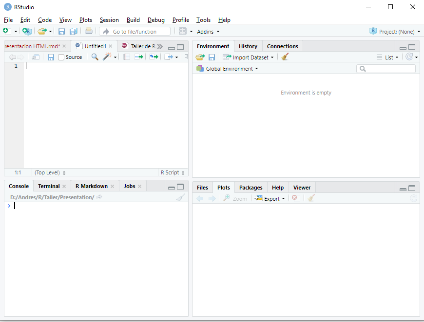
Ventana 1 - Script de trabajo: arriba a la izquierda. En ella abriremos y editaremos nuestros scripts de trabajo. A medida que se escriben las líneas para ejecutarlas debemos posicionarnos en ella (o seleccionarla) y correrlas (Run, arriba a la derecha, o más fácil Ctrl + r).
Ventana 2 - consola: se ubica abajo a la izquierda. En ella se nos muestra el R propiamente dicho. Todo lo que nosotros ejecutamos en la ventana 1 se corre en esta segunda ventana, donde se nos muestra el resultado de nuestra corrida. Si se quiere se puede escribir directamente en ella, pero lo que hagamos no quedará guardado en nuestro script de trabajo.
Ventana 3 - objetos e historial: arriba a la derecha. Aquí podemos visualizar (en la pestaña Environment) todos los objetos, bases de datos, funciones, etc. que hayamos importado o creado. Es muy importante ya que nos permite tener en vista nuestro entorno de trabajo (que es una funcionalidad con la que el R nativo no cuenta, uno debe memorizar los objetos creados). Si se tilda en alguno de los objetos, es equivalente a ejecutar el comando
View(), y nos permite visualizar en forma de tabla nuestras bases de datos (se abren en la ventana 1). Contamos aquí con una opción gráfica para importar nuestras bases de datos, pero en este curso lo haremos directamente con código. También contamos con una escoba que nos permite borrar todos los objetos que tengamos. La segunda pestaña History nos permite precisamente ver el historial de corridas que hayamos hecho. Allí podemos revisar comandos que ya ejecutamos y queremos repetir.Ventana 4 - gráficos, paquetes y ayuda: abajo a la derecha. Usaremos 3 de las pestañas:
- Plots: aquí visualizaremos todos los gráficos que vayamos generando. Nos permite mediante las flechas de arriba a la izquierda ir viendo también los gráficos anteriores. El icono Zoom nos facilita la visualización externa del gráfico que estemos viendo. Además presenta opciones de exportación.
- Packages: aquí podemos visualizar la lista completa de paquetes que tenemos instalados. Si tildamos uno lo activamos (equivalente al comando
library, ver más adelante). Si tildamos en Install podemos agregar nuevos paquetes que estén en el CRAN (base de datos de librerías). - Help: como bien dice el nombre es la ventana de ayuda. Súper útil y de consulta constante. Allí podemos ver las descripciones que escribieron los creadores de cada función y/o paquete que usemos.
Como se ve RStudio nos permite realizar diversas acciones de forma gráfica, sin necesidad de utilizar código. Mi postura en general es dejar escrito en nuestro script la mayor cantidad de pasos posibles, ya que todo lo que hagamos de forma gráfica no nos queda disponible cuando volvamos a ver nuestro archivo. En este sentido, la instalación de paquetes o las búsquedas de ayuda no es algo que necesitemos en un futuro en nuestro script y podemos hacerlo de forma gráfica. Pero, contrariamente, la carga de la base de datos, paquetes, exportación de figuras, nos resultará de utilidad dejarlo plasmado en el escrito.
RStudio incluye un infinidad de opciones extra que no hacen al objetivo de este curso. Para usos más avanzados es recomendable revisar la página web de los creadores, que es muy completa e incluye muchas utilidades y tutoriales. También se encuentra mucha ayuda en la pestaña Help.
1.5 Script de trabajo
En este apartado comenzaremos propiamente a desarrollar un script de trabajo. Iremos viendo paso a paso como avanzar en su armado, desde la carga de las librerías, introducir la base de datos y el manejo de la misma, el análisis de los datos hasta la visualización gráfica de los mismos.
Lo primero que hay que hacer un vez ingresados en RStudio es crear un nuevo script (File -> New File -> R Script). Allí nosotros podremos ir desarrollando los comandos correspondientes.
Todo script de trabajo tiene una estructura similar, la que yo utilizo es:
- Carga de las librerías.
- Carga de la base de datos.
- Creación de las databases necesarias.
- Armado de las funciones necesarias (si es que las tuviéramos).
- Análisis de los datos separados por títulos.
Los títulos son marcas que hacemos para volver sencillamente a otras partes de nuestro script (tengamos en cuenta que fácilmente se superan las 1000 líneas). Para introducir un título (o marcador) colocamos la palabra clave como un comentario y agregamos una serie de signos - a la derecha. Por ejemplo:
A partir de este momento podemos ver nuestros títulos en 2 lugares: en la parte inferior izquierda de la ventana 1 o en la parte superior derecha de la misma ventana en el icono con la leyenda Outline. Esta estructuración, insisto, es muy útil para movernos dentro del documento sin perder mucho tiempo buscando algún comando. A su vez, si introducimos más # al comienzo, se generan títulos de un nivel inferior.
1.6 Instalación y carga de las librerías
R se maneja en base a paquetes (o librerías) que contienen las funciones que queramos utilizar. Como base R trae pre-instalados una serie de paquetes que nos sirven para realizar gran cantidad de aplicaciones. Sin embargo, es muy usual que prefiramos usar otras funciones no disponibles en la base.
Para instalar una librería debemos ejecutar el código
install.packages("nombre del paquete")La instalación de paquetes debemos realizarla una única vez. Como se mencionó al describir la Ventana 4, también podemos instalar los paquetes de un modo gráfico en la pestaña Packages de RStudio.
Cada vez que ingresamos a RStudio debemos cargar nuestras librerías a utilizar. Para cargar una librería utilizamos el código
library("nombre del paquete")Si queremos cargar varios paquetes, podemos ejecutar varios comandos library en una misma línea separándolos con “;”, y así cargar todos en una única línea de corrida (Ctrl + r). Por otro lado, si bien uno puede tener un conjunto de paquetes que utiliza habitualmente, no es recomendable cargar de más ya que muchas veces se solapan funciones y podemos tener alguna complicación.
Para el uso de este taller, instalaremos los paquetes agricolae, car, sciplot, patchwork, gridExtra , viridis y tidyverse. Este último incluye una serie de paquetes en su interior, que abarcan desde funcionalidades gráficas hasta opciones del manejo de datos.
Así podemos cargarlos todos de la siguiente manera:
library(agricolae);library(tidyverse);library(car)
library(sciplot);library(patchwork); library(gridExtra)
library(viridis)1.7 Carga de nuestros datos
Como para casi cualquier acción que queramos ejecutar en R, la carga de la base de datos puede hacerse de muchas maneras. En la ventana 3 se nos ofrece una opción gráfica (a través de “Import Dataset”).
De todas maneras, es recomendable hacerlo mediante código, para que cada vez que ingresemos podamos incorporar la base de datos de manera muy sencilla.
1.7.1 Establecer el directorio de trabajo
Lo primero que debemos hacer es establecer el directorio de trabajo. Para ello corremos el comando (con un directorio ejemplo):
setwd("D:/DATOS/R")Si queremos revisar en qué directorio nos encontramos, ejecutamos
getwd()[1] "D:/OneDrive/R/Taller R 2025 Doctorado/curso_graficos_ggplot/curso_completo"Ahora antes de ver cómo cargar la base de datos, haremos una breve explicación de como crear la base de datos.
1.7.2 Armado de la base de datos
Una vez más, aquí mostraré mi forma de armar las bases de datos, hay muchas..
La forma de la base de datos es la misma que se utiliza en otros software como Infostat. Debemos crear una columna por cada factor o variable que tengamos, y repetir el nivel del factor para cada unidad experimental (cada fila).
El formato en el que yo creo mis bases de datos es csv (archivo separado por comas). Para ello se exporta desde excel o calc el archivo en ese formato. El documento debe tener una única hoja con las base de datos limpia, es decir sin columnas o filas extras con comentarios, datos extra, etc. Por otro lado, es recomendable que los nombres de las columnas sean lo más cortos posibles, y que no tengan espacios. Otra recomendación es omitir el uso de tildes u otros caracteres especiales en cualquier parte del documento puede llegar a tener problemas según la codificación que usemos en RStudio. La más compatible es la UTF-8, que no suele generar problemas.
Resumiendo, la recomendación es que una vez que tenemos nuestra tabla (en excel por ejemplo) con los datos listos, copiarla y pegarla en un documento nuevo. Allí ver de simplificar los nombres de las columnas, también de los niveles de factores a utilizar. Guardar este nuevo documento como csv, si estamos en idioma español establecer para la separación de columnas “;”. Por supuesto, guardamos el archivo en el directorio de trabajo.
Para este curso utilizaremos inicialmente la base de datos “metals.csv”.
1.7.3 Cargando la base de datos
En este aparto, cabe destacar que R es un lenguaje orientado a objetos. Cargaremos nuestra base de datos como un “objeto” de R, al cual debemos asignarle un nombre. De ahí en más, cualquier acción que modifique nuestro “objeto” quedará guardada en el objeto mismo, pero no modificará nuestro archivo original (el csv en este caso). Para crear un objeto lo asignamos con “<-” (de forma rápida se escribe con Alt + -) o con el signo “=”.
Una primera forma de cargarla es mediante la función read.csv, por ejemplo:
metales <- read.csv("metales.csv")Como la base está en español, no se carga correctamente. Debemos corregir un par de parámetros:
metales <- read.csv("metales.csv", dec=",", sep=";")
lapply(metales, class) # vemos que crea factores$Pote
[1] "integer"
$GT
[1] "character"
$CO2
[1] "integer"
$ET
[1] "character"
$Organo
[1] "character"
$PS
[1] "numeric"
$Mn
[1] "numeric"
$Cu
[1] "numeric"
$Zn
[1] "numeric"
$Cd
[1] "numeric"
$Pb
[1] "numeric"
$SPAD
[1] "numeric"La función que yo más utilizo es la que viene con el paquete tidyverse, llamada read_csv. Si usamos read_csv2, toma la coma como separador decimal:
metales <- read_csv2("metales.csv")ℹ Using "','" as decimal and "'.'" as grouping mark. Use `read_delim()` for more control.Rows: 142 Columns: 12
── Column specification ────────────────────────────────────────────────────────
Delimiter: ";"
chr (3): GT, ET, Organo
dbl (9): Pote, CO2, PS, Mn, Cu, Zn, Cd, Pb, SPAD
ℹ Use `spec()` to retrieve the full column specification for this data.
ℹ Specify the column types or set `show_col_types = FALSE` to quiet this message.Vemos que en este caso nos mostró directamente la clase de cada columna, y que crea objetos tipo character en vez de factor.
En la ventana 3, nos aparecerán los objetos que incorporemos.
1.8 Caracterización de la base de datos
Para ver primeros datos y los nombres de las columnas ejecutamos los comandos:
head(metales)# A tibble: 6 × 12
Pote GT CO2 ET Organo PS Mn Cu Zn Cd Pb SPAD
<dbl> <chr> <dbl> <chr> <chr> <dbl> <dbl> <dbl> <dbl> <dbl> <dbl> <dbl>
1 1 ES Mentor 400 No Hoja 4.58 53.9 10.3 103. 1.30 7.22 29.5
2 2 ES Mentor 400 No Hoja 3.61 51.1 7.36 149. 1.09 2.75 21.5
3 3 ES Mentor 400 No Hoja 4.27 41.7 6.90 96.9 0.956 2.53 24.7
4 4 ES Mentor 400 Si Hoja 4.62 54.0 8.77 119. 0.901 3.05 22.6
5 5 ES Mentor 400 Si Hoja 4.68 51.2 6.64 108. 1.16 3.21 25.6
6 6 ES Mentor 400 Si Hoja 4.38 50.3 8.16 111. 0.682 3.69 22.8Para ver la tabla completa, se debe tildar en el nombre del objeto en la ventana 3. Aprovechando que tenemos la tabla a nuestra vista, daré aquí una breve descripción de los datos. La tabla cargada cuenta con datos de plantas de soja de 3 cultivares (o genotipos) diferentes: Alim 3,14, ES Mentor y Sigalia (todos en la columna GT). Estas plantas crecieron en cámaras climáticas con condiciones controladas de luz, temperatura, humedad y concentración de CO2. Las siguientes columnas de la base de datos son las siguientes:
CO2: es la concentración en la cual crecieron las plantas. Tiene dos niveles: 400 ppm y 550 ppm.
ET: estrés térmico. Algunas de las plantas fueron sometidas a estrés térmico en el periodo crítico de llenado de grano. Tiene dos niveles: Sí o No.
Órgano: refiere a si se trata de raíces, tallos, hojas, vainas o semillas.
PS: peso seco del órgano correspondiente.
Mn, Cu, Zn, Pb, Cd: concentración del metal en el órgano correspondiente en ppm.
SPAD: medición promedio de SPAD (verdor) en hojas a lo largo del desarrollo. Valor sólo válido para las hojas.
Además podemos ver un resumen de nuestra base o hacerle “preguntas” a R sobre la base de datos. Al escribir “$” a continuación de un objeto podemos ver las columnas individuales. Por ejemplo:
summary(metales) # resumen de la base Pote GT CO2 ET
Min. : 1.00 Length:142 Min. :400 Length:142
1st Qu.:10.00 Class :character 1st Qu.:400 Class :character
Median :18.50 Mode :character Median :475 Mode :character
Mean :18.46 Mean :475
3rd Qu.:27.00 3rd Qu.:550
Max. :36.00 Max. :550
Organo PS Mn Cu
Length:142 Min. : 1.030 Min. : 2.122 Min. : 2.568
Class :character 1st Qu.: 1.875 1st Qu.: 7.952 1st Qu.: 5.899
Mode :character Median : 2.720 Median :20.450 Median : 7.272
Mean : 3.561 Mean :24.086 Mean :10.582
3rd Qu.: 4.215 3rd Qu.:34.296 3rd Qu.:12.472
Max. :12.330 Max. :83.826 Max. :38.300
Zn Cd Pb SPAD
Min. : 13.41 Min. :0.623 Min. : 0.0340 Min. :20.27
1st Qu.: 43.06 1st Qu.:0.961 1st Qu.: 0.1308 1st Qu.:23.09
Median : 80.55 Median :1.207 Median : 2.1740 Median :25.84
Mean : 91.42 Mean :1.336 Mean : 2.7108 Mean :25.76
3rd Qu.:103.41 3rd Qu.:1.667 3rd Qu.: 4.4465 3rd Qu.:27.69
Max. :345.52 Max. :2.849 Max. :11.6470 Max. :32.24 is.double(metales$PS) # double indica numérico continuo[1] TRUEis.character(metales$GT)[1] TRUElevels(as.factor(metales$GT)) # para ver los niveles de un factor[1] "Alim 3,14" "ES Mentor" "Sigalia" levels(as.factor(metales$Organo))[1] "Hoja" "Semilla" "Tallo" "Vaina" 1.8.1 Caracterización gráfica
En este caso haremos algunos gráficos sencillos para observar la distribución de nuestra base de datos. La función plot (y sus derivados, como en este caso boxplot) viene con R base y es la forma más rápida y sencilla de graficar.
boxplot(metales$PS~metales$Organo)
boxplot(metales$Pb~metales$GT)
plot(metales$Cd)
plot(metales$Pb~metales$Cd)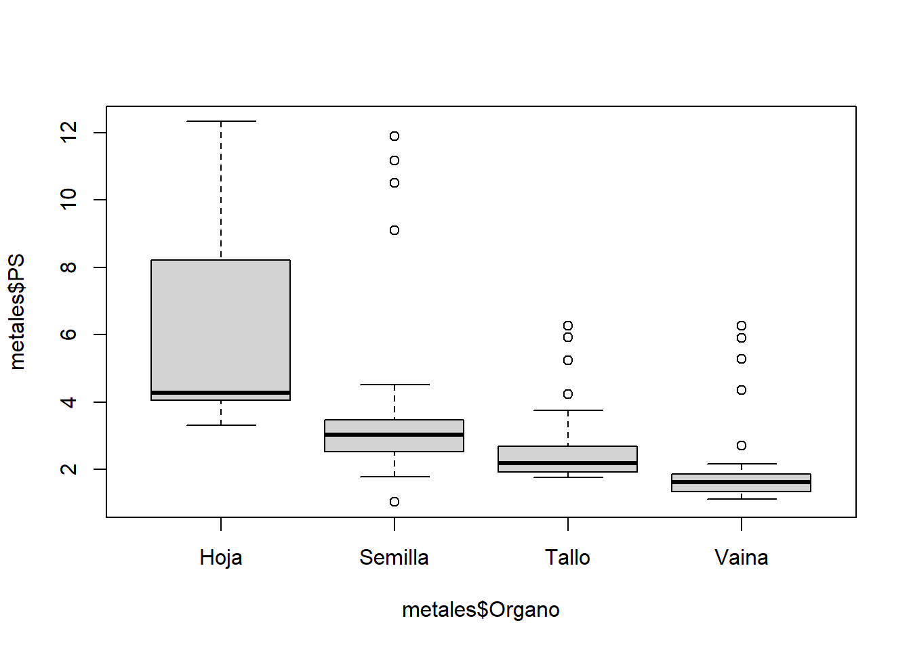
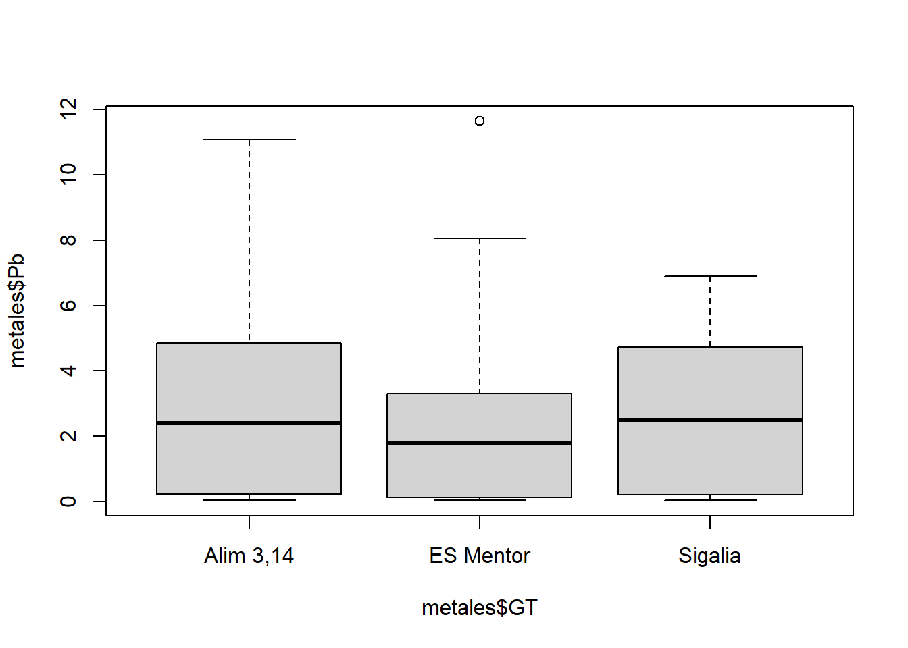
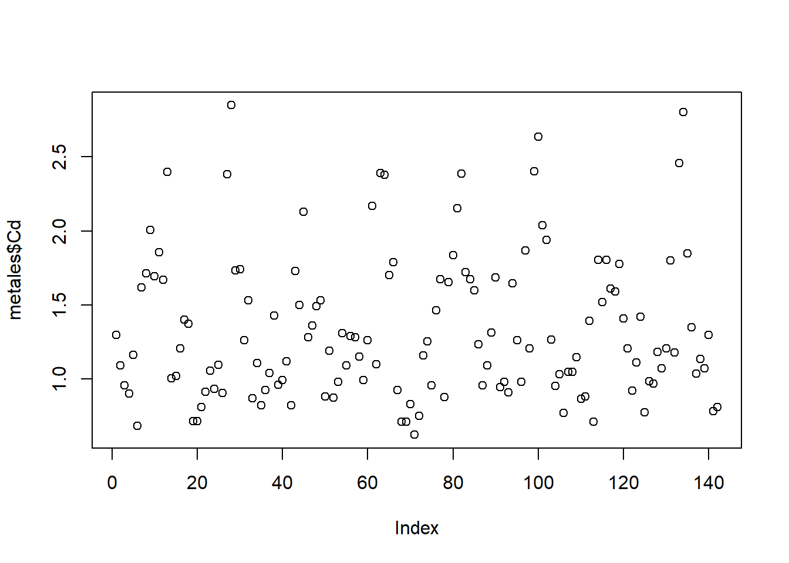
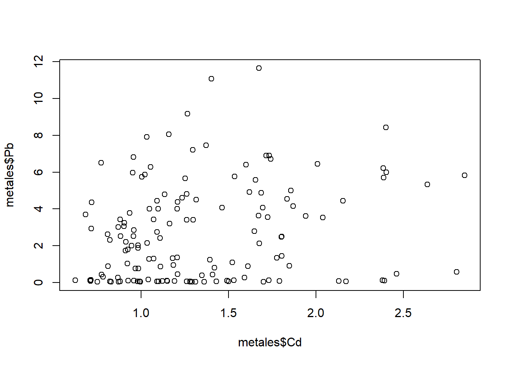
1.9 Manejo de la base de datos
1.9.1 Subdividir la base de datos
Algo muy común en el trabajo en R, es la necesidad de subdividir la base de datos para utilizar únicamente una parte de ella. Veremos un par de formas de hacerlo.
Con las funciones que incluye R base, utilizaremos subset. Por ejemplo para elegir solo las muestras del genotipo Alim 3,14:
ALIM <- subset(metales, metales$GT=="Alim 3,14")Y creamos un objeto que se llama ALIM, nuevamente mediante <-.
Otra forma de hacerlo es mediante el uso de pipes (%>%). Las pipes sirven para concatenar una serie de acciones para modificar una base de datos. En primer lugar se ubica la base a modificar y entre cada linea de comando %>% (Ctrl + Shift + m). Así, podemos crear la misma base de antes con filter:
ALIM <- metales %>% filter(GT == "Alim 3,14")Si queremos filtrar por más de un parámetro:
# en dos pasos
ALIM_VyS <- metales %>%
filter(GT == "Alim 3,14") %>% # se agrega a lo anterior
filter(Organo =="Vaina"| Organo =="Semilla")1.9.2 Seleccionar filas o columnas
En R base, el uso de [ ] sirve para seleccionar filas o columnas de una database, tal que data[filas,columnas]. En el entorno de dplyr utilizaremos la función select para columnas:
# seleccionar filas 1 a 3
metales[1:3,]# A tibble: 3 × 12
Pote GT CO2 ET Organo PS Mn Cu Zn Cd Pb SPAD
<dbl> <chr> <dbl> <chr> <chr> <dbl> <dbl> <dbl> <dbl> <dbl> <dbl> <dbl>
1 1 ES Mentor 400 No Hoja 4.58 53.9 10.3 103. 1.30 7.22 29.5
2 2 ES Mentor 400 No Hoja 3.61 51.1 7.36 149. 1.09 2.75 21.5
3 3 ES Mentor 400 No Hoja 4.27 41.7 6.90 96.9 0.956 2.53 24.7# seleccionar columnas 1 a 3
metales[,1:3]# A tibble: 142 × 3
Pote GT CO2
<dbl> <chr> <dbl>
1 1 ES Mentor 400
2 2 ES Mentor 400
3 3 ES Mentor 400
4 4 ES Mentor 400
5 5 ES Mentor 400
6 6 ES Mentor 400
7 7 Sigalia 400
8 8 Sigalia 400
9 9 Sigalia 400
10 10 Sigalia 400
# ℹ 132 more rowsmetales %>% select(1:3)# A tibble: 142 × 3
Pote GT CO2
<dbl> <chr> <dbl>
1 1 ES Mentor 400
2 2 ES Mentor 400
3 3 ES Mentor 400
4 4 ES Mentor 400
5 5 ES Mentor 400
6 6 ES Mentor 400
7 7 Sigalia 400
8 8 Sigalia 400
9 9 Sigalia 400
10 10 Sigalia 400
# ℹ 132 more rows# seleccionar por nombre de la columna
metales %>% select(GT,CO2,Pb)# A tibble: 142 × 3
GT CO2 Pb
<chr> <dbl> <dbl>
1 ES Mentor 400 7.22
2 ES Mentor 400 2.75
3 ES Mentor 400 2.53
4 ES Mentor 400 3.05
5 ES Mentor 400 3.21
6 ES Mentor 400 3.69
7 Sigalia 400 4.93
8 Sigalia 400 6.89
9 Sigalia 400 6.45
10 Sigalia 400 4.06
# ℹ 132 more rows1.9.3 Creación de nuevas variables
Una opción muy útil ligada al paquete dplyr es la de transformar nuestras bases de datos para algún gráfico en particular, sin necesidad de cambiar la tabla original. Para ello utilizaremos la función mutate, que permite generar muchos cambios en la base de datos. Por ejemplo, en la base ALIM, si queremos agregar la cantidad absoluta de Pb extraída:
metales <- metales %>%
mutate("Pb_total" = Pb*PS) # se crea una nueva columna
# para ver la columna nueva
metales$Pb_total [1] 33.06302 9.91306 10.79029 14.08638 15.00876 16.17096 20.29512
[8] 27.08556 26.89233 16.41048 21.13308 13.07837 90.21291 47.62605
[15] 34.42750 32.72702 104.37124 60.83160 11.97888 18.05868 11.41854
[22] 9.45945 26.60670 14.74590 15.39456 10.70520 26.29791 21.00659
[29] 29.45446 26.90309 56.83056 71.08245 28.40670 20.39830 22.12022
[36] 15.66058 0.53040 0.21148 0.35308 0.12864 0.18957 0.15876
[43] 0.34568 0.16218 0.26832 0.16653 0.13771 0.20181 1.30689
[50] 0.26668 0.24779 0.06052 0.11200 0.13858 0.17000 0.09720
[57] 0.11232 0.15456 0.21060 0.17806 0.13260 0.18768 0.31376
[64] 0.43420 0.10500 0.19250 1.15430 1.39783 0.68175 0.09020
[71] 0.12669 0.09306 19.56636 12.97743 15.53136 8.62628 22.82812
[78] 6.70020 11.51128 8.49915 10.31240 12.42600 6.58415 3.86750
[85] 40.15790 17.30625 7.66112 11.69561 13.83342 14.11765 3.68520
[92] 3.53430 3.21594 5.76495 5.95000 3.79984 8.42044 9.41645
[99] 11.57807 12.14784 6.73466 7.59570 48.02186 35.38976 33.43392
[106] 22.93984 10.68801 1.87756 0.12788 0.41223 3.65980 1.99801
[113] 0.22490 1.61504 2.01480 4.27158 1.36136 0.36025 8.40807
[120] 1.19240 0.75150 1.33900 1.48086 1.53242 0.71118 0.96642
[127] 0.95130 1.18125 2.77965 2.02789 2.81808 2.32225 0.66102
[134] 1.00975 1.17260 0.57710 12.66513 25.29600 14.93736 7.39102
[141] 0.57288 1.093471.9.4 Cambio en los niveles de un factor
También podemos cambiar los niveles de una factor mutate, mediante la siguiente estructura:
... %>%
mutate(nombre_factor = fct_recode(nombre_factor,
"nombre nuevo" = "nombre viejo"))Y podemos incluir una línea para cada nivel que queramos modificar. Por ejemplo:
ALIM %>% select(CO2, ET, PS) %>%
mutate(ET = fct_recode(ET,
"Control" = "No",
"Estrés térmico" = "Si")) # A tibble: 47 × 3
CO2 ET PS
<dbl> <fct> <dbl>
1 400 Control 10.7
2 400 Control 8.29
3 400 Control 5.86
4 400 Estrés térmico 7.46
5 400 Estrés térmico 9.43
6 400 Estrés térmico 8.15
7 550 Control 11.8
8 550 Control 12.3
9 550 Control 9.45
10 550 Estrés térmico 8.45
# ℹ 37 more rows1.10 Actividad 1
- Cree a partir de la base de datos original, una que contenga únicamente los tallos y hojas del cultivar ES Mentor, y las columnas de CO2, ET, Organo, PS, Zn y Pb.
- Filtre la base creada para obtener otra que solo tenga aquellos datos con más de 3 ppm de Pb.
2 Unidad 2. Análisis y representación de datos numéricos
Veremos los análisis a realizar para procesar variables continuas (correlación y regresión) y como representarlas gráficamente de una forma más detallada que como lo vimos hasta ahora.
2.1 Correlación
Cuando queremos evaluar la relación entre 2 variables continuas, sin establecer relaciones de dependencia, el análisis que debemos hacer es un análisis de correlación lineal. El test de correlación lineal más utilizado es el de correlación de Pearson, que nos arroja el coeficiente de Pearson, que toma valores entre -1 y 1, según la relación sea inversa o directa. Valores cercanos a cero indican falta de relación entre las variables. La correlación de Pearson tiene como supuestos la distribución normal de las variables (entre otros). Debemos poner a prueba esos supuestos para poder realizar este tipo de análisis.
Comenzaremos creando una base de datos de las semillas:
SEM <- metales %>% filter(Organo == "Semilla")Veremos primero como analizar de a pares de variables. Lo recomendable es iniciar con una exploración gráfica de los datos, en este caso vamos a relacionar la acumulación de Cu y Zn en semillas.
# Exploración gráfica
plot(SEM$Cu, pch = 19)
plot(SEM$Zn, pch = 17)
plot(SEM$Cu, SEM$Zn)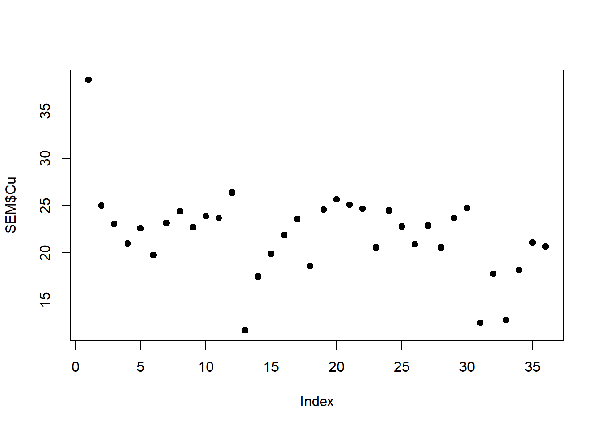
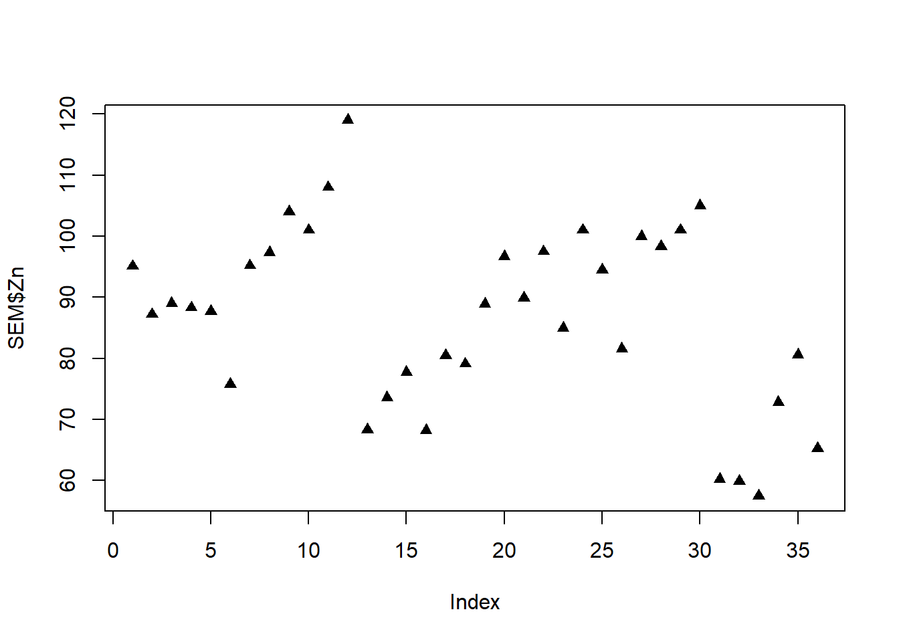
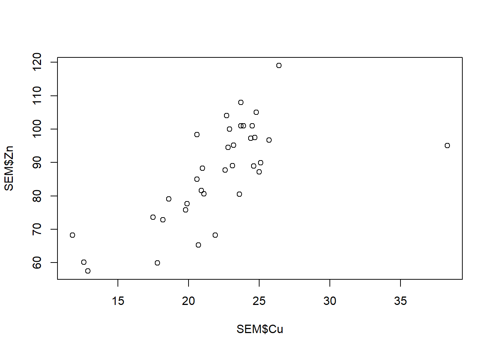
Vemos que hay un valor extremo en el gráfico de Cu, para identificarlo podemos correr identify:
plot(SEM$Cu)
identify(SEM$Cu)Ahora veremos cómo hacer la correlación de pearson, de momento ignorando los supuestos:
cor.test(SEM$Cu, SEM$Zn, method = "pearson")
Pearson's product-moment correlation
data: SEM$Cu and SEM$Zn
t = 5.4405, df = 34, p-value = 4.599e-06
alternative hypothesis: true correlation is not equal to 0
95 percent confidence interval:
0.4558295 0.8256796
sample estimates:
cor
0.6822013 Vemos que nos arroja los resultados del valor del coeficiente lineal de pearson y su valor p asociado.
2.1.1 Análisis de normalidad
En esta sección veremos cómo poner a prueba la normalidad de nuestros datos con el test de Shapiro Wilk y como visualizarlo gráficamente en un qqplot. Recordemos que la hipótesis nula del test es que los datos son normales, por lo que si rechazamos la hipótesis (p<0,05) no hay normalidad:
# Forma analítica
shapiro.test(SEM$Cu)
shapiro.test(SEM$Zn)
# Forma gráfica
qqnorm(SEM$Cu)
qqline(SEM$Cu, col="red", lwd=2)
qqnorm(SEM$Zn)
qqline(SEM$Zn, col="red", lwd=2)
Shapiro-Wilk normality test
data: SEM$Cu
W = 0.87266, p-value = 0.0006623
Shapiro-Wilk normality test
data: SEM$Zn
W = 0.97345, p-value = 0.527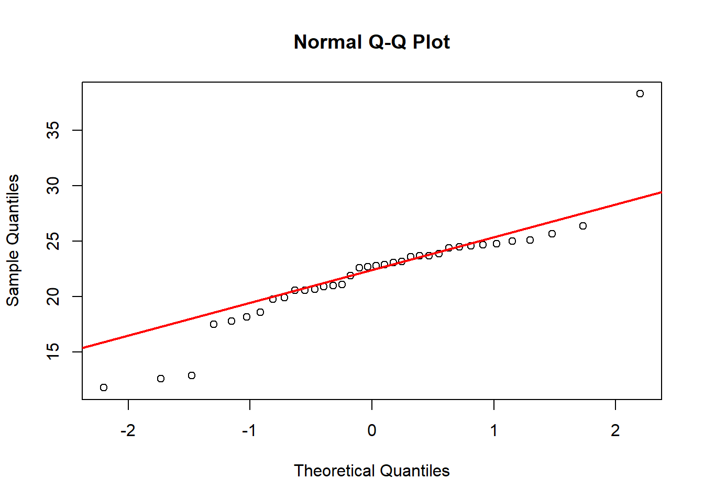
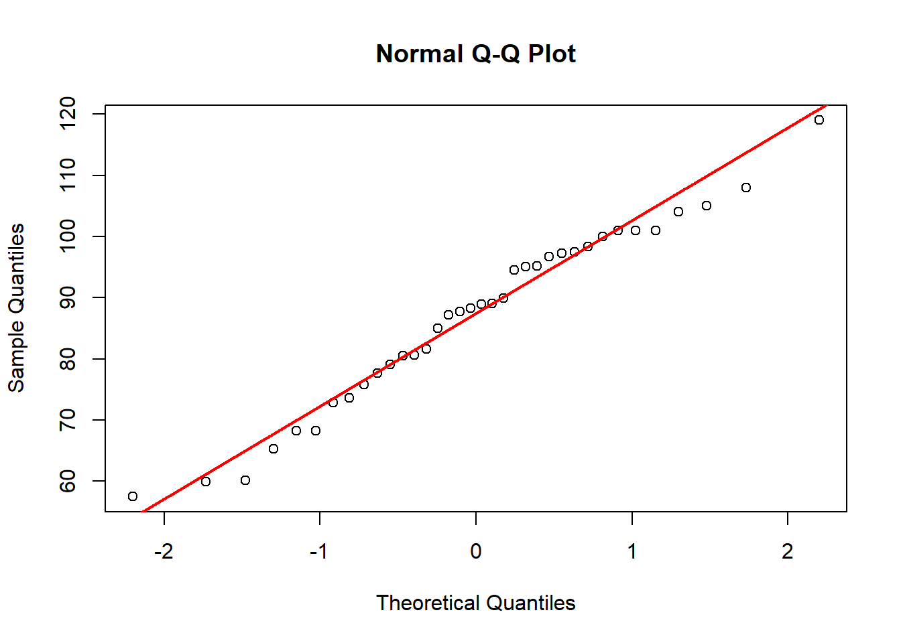
Vemos que para el caso del Cu no son normales los datos de acuerdo con el test analítico, aunque el gráfico muestra un valor extremo. En una primera instancia podemos transformar las variables, que en R lo podemos hacer directamente:
shapiro.test(log(SEM$Cu)) # convertimos al logaritmo en base 10
Shapiro-Wilk normality test
data: log(SEM$Cu)
W = 0.86508, p-value = 0.0004317qqnorm(log(SEM$Cu))
qqline(log(SEM$Cu), col="red", lwd=2)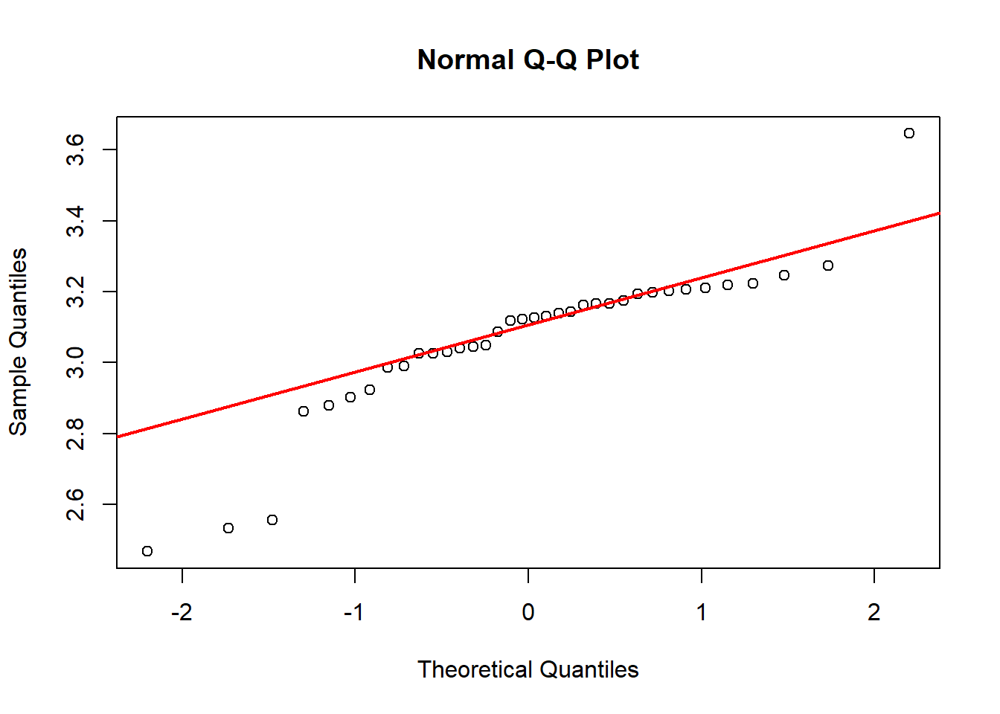
Sigue sin mostrar normalidad. Como vimos antes, el primer valor es mucho más alto que sus réplicas, si tomáramos la decisión de extraerlo hacemos el test sin él:
shapiro.test(SEM[-1,]$Cu)
Shapiro-Wilk normality test
data: SEM[-1, ]$Cu
W = 0.87851, p-value = 0.001098qqnorm(SEM[-1,]$Cu)
qqline(SEM[-1,]$Cu, col="red", lwd=2)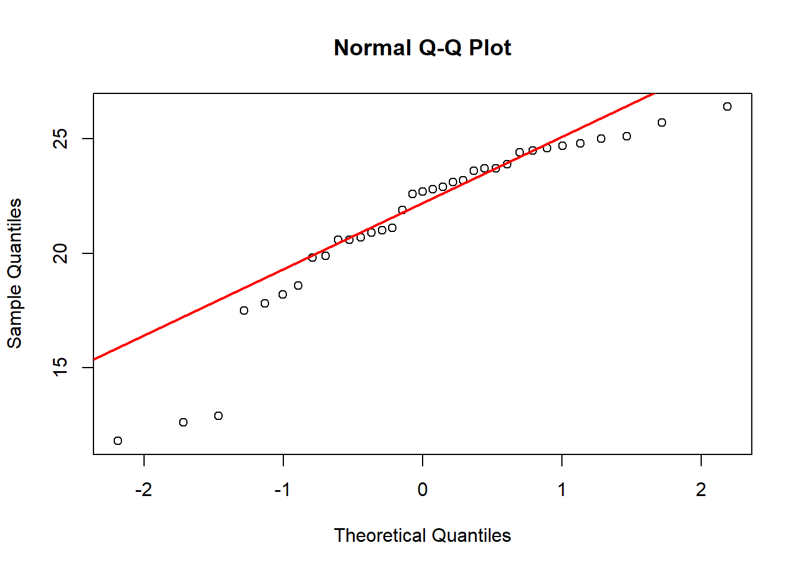
Podemos conformarnos con la eliminación, y correr el test así (no olvidar eliminar el valor en ambas bases de datos):
cor.test(SEM[-1,]$Cu, SEM[-1,]$Zn, method = "pearson")
Pearson's product-moment correlation
data: SEM[-1, ]$Cu and SEM[-1, ]$Zn
t = 7.5311, df = 33, p-value = 1.161e-08
alternative hypothesis: true correlation is not equal to 0
95 percent confidence interval:
0.6283377 0.8919974
sample estimates:
cor
0.7950977 Si no logramos de ninguna manera corregir la normalidad, podemos también correr el test no paramétrico de Spearman que no tiene supuestos asociados, aunque también presenta menor potencia. En este caso el coeficiente es el coeficiente de Spearman (rho):
cor.test(SEM$Cu, SEM$Zn,
alternative = "two.sided",
method = "spearman", exact = TRUE)
Spearman's rank correlation rho
data: SEM$Cu and SEM$Zn
S = 2004.8, p-value = 2.233e-07
alternative hypothesis: true rho is not equal to 0
sample estimates:
rho
0.7419853 2.1.2 Muchas columnas a la vez
Existen otros test que permiten correlacionar pares de variables pero correrlas todas a la vez. A diferencia de la función cor.test que solo admite 2 variables, la función cor permite cargar una serie de columnas y luego podemos ver los coeficientes en forma matricial:
CORR <- cor(SEM[, c("Pb", "Cd", "Mn", "Cu", "Zn")],
use = "complete.obs", method = "pearson")
CORR # obtenemos los coeficientes Pb Cd Mn Cu Zn
Pb 1.0000000000 0.1480843 0.3825917 0.1104054 0.0009652035
Cd 0.1480843231 1.0000000 -0.3435795 0.2023747 0.6365851679
Mn 0.3825916853 -0.3435795 1.0000000 -0.3945261 -0.3955337272
Cu 0.1104053538 0.2023747 -0.3945261 1.0000000 0.6822013201
Zn 0.0009652035 0.6365852 -0.3955337 0.6822013 1.0000000000Otra función de utilidad que nos permite ver los coeficientes y los valores p al mismo tiempo es la función rcorr del paquete Hmisc:
library(Hmisc)Warning: package 'Hmisc' was built under R version 4.4.2CORR.Sem <- rcorr(as.matrix(SEM[,7:11])) #argumento matricial
CORR.Sem # aquí observamos primero los valores de coeficientes y luego el valor p Mn Cu Zn Cd Pb
Mn 1.00 -0.39 -0.40 -0.34 0.38
Cu -0.39 1.00 0.68 0.20 0.11
Zn -0.40 0.68 1.00 0.64 0.00
Cd -0.34 0.20 0.64 1.00 0.15
Pb 0.38 0.11 0.00 0.15 1.00
n= 36
P
Mn Cu Zn Cd Pb
Mn 0.0173 0.0170 0.0402 0.0213
Cu 0.0173 0.0000 0.2365 0.5215
Zn 0.0170 0.0000 0.0000 0.9955
Cd 0.0402 0.2365 0.0000 0.3887
Pb 0.0213 0.5215 0.9955 0.3887 Ahora veremos dos paquetes que nos permiten ver en forma gráfica el resultado de nuestra correlación. El primero es el paquete corrplot del cual usaremos las funciones cor.mtest y corrplot:
library(corrplot)
pValues <- cor.mtest(SEM[,7:11]) # generamos un objeto de los valores p
corrplot(CORR.Sem$r,
type = "upper",
tl.col = "black",
addCoef.col = 'grey20',
p.mat = pValues$p, # para ver los valores p
sig.level = 0.05,
insig = 'blank',
tl.srt = 45)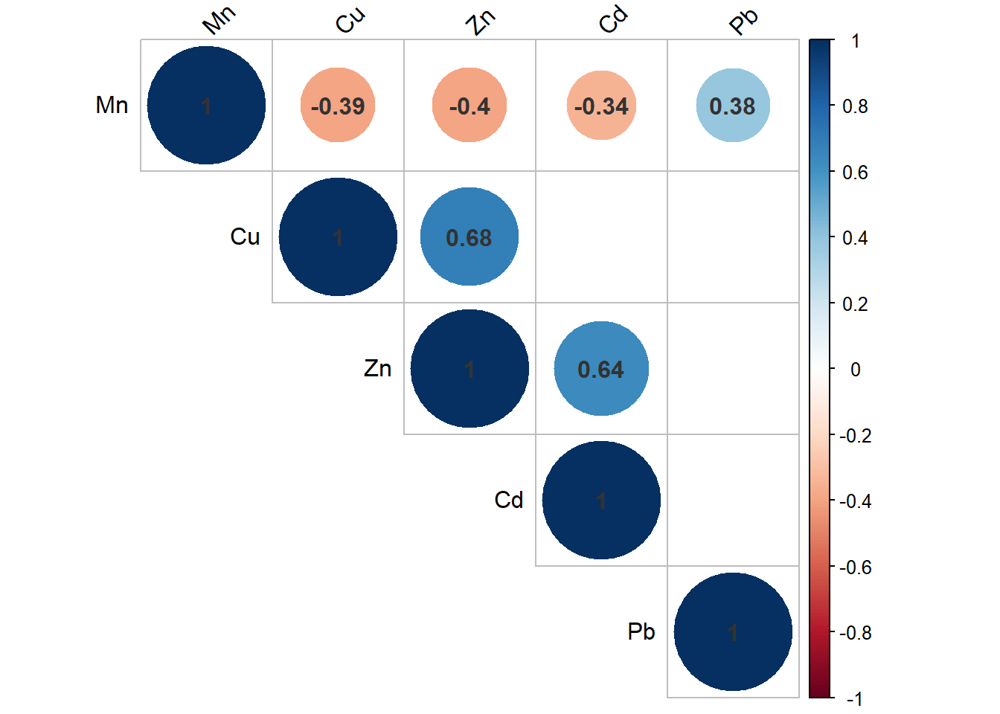
Finalmente, introduciré la función chart.Correlation del paquete PerformanceAnalytics, que permite visualizar interacciones, gráficos de dispersión, coeficientes de correlación y significancia todo al mismo tiempo:
library("PerformanceAnalytics")
chart.Correlation(SEM[,9:11],
histogram=TRUE,
method = "pearson",
pch=19)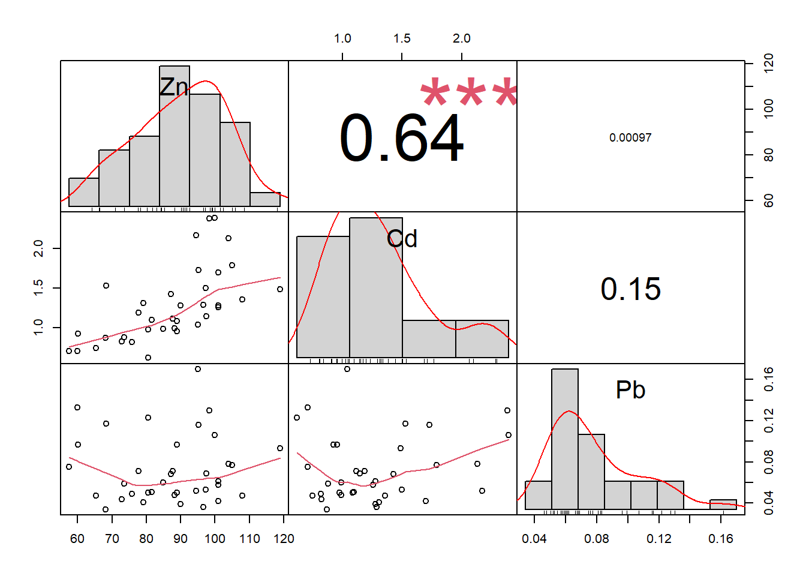
Los invito a profundizar más en el uso de los paquetes por su propia cuenta.
2.2 Regresión lineal simple
El análisis de regresión lineal tiene algunos parecidos con el de correlación, pero en este caso hay una de la variables que consideramos que influye en la otra. Es decir, que hay una variable x independiente (regresora) y una y dependiente. Ambas variables deben ser numéricas. El modelo plantea el ajuste lineal de los datos, por lo tanto hay pruebas de hipótesis para la ordenada al origen y la pendiente de la recta de ajuste. Los supuestos del modelo son la distribución normal de las variables y la homogeneidad de los errores. Un detalle importante, es que el modelo solo es válido en el rango de nuestra x.
Por otro lado, existe un parámetro llamado el coeficiente de determinación (R2) que nos da una idea de qué porcentaje de variabilidad de y está siendo explicado con x. Este coeficiente toma valores entre 0 y 1, cuanto mayor es mejor es el ajuste de nuestra nube de puntos a la recta.
En nuestro ejemplo para desarrollar una regresión lineal simple, relacionaremos el verdor de las hojas (a través de la medición SPAD) con el Pb acumulado en las mismas. Para ello generaremos una base de datos para las hojas, y haremos un gráfico rápido para ver esa relación:
HOJA <- metales %>% filter(Organo == "Hoja")
plot(HOJA$SPAD, HOJA$Pb, pch= 19)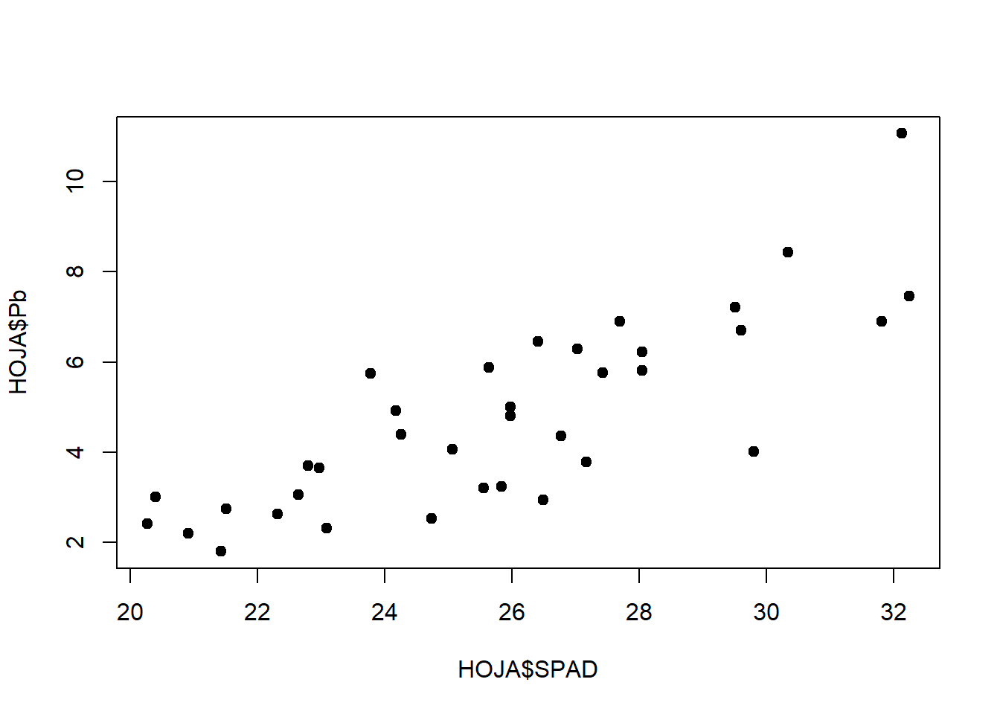
Para realizar una regresión lineal (y que en realidad será de la misma manera para un ANOVA), se debe plantear un modelo lineal mediante la función lm de la forma lm(y~x):
fit1 <-lm(Pb ~ SPAD, data = HOJA)Una vez creado el objeto, vamos a poner a prueba los supuestos, tanto de forma gráfica como analítica. Al someter nuestro modelo a la función plot, se nos crean 4 gráficos para poner a prueba los supuestos. Para verlos todos juntos dividiremos la ventana gráfica con la función layout:
# Gráfico de supuestos
layout(matrix(1:4, 2, 2)); plot(fit1) ;layout(1)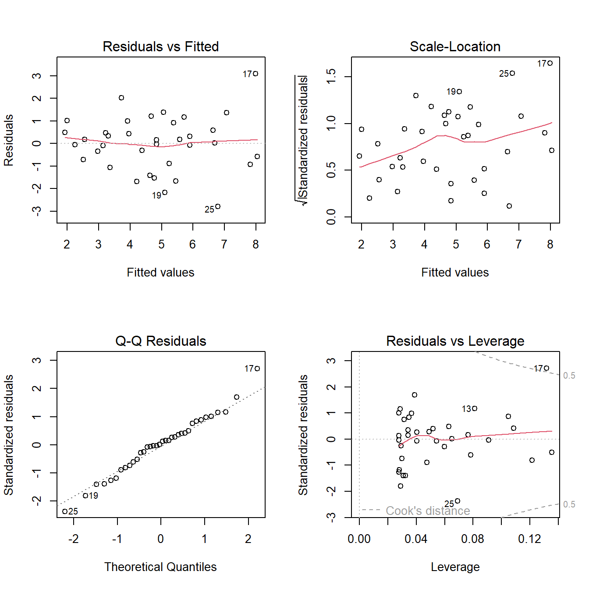
Vemos en los dos gráficos superiores la dispersión de los datos, debemos fijarnos que sea homogénea sin patrones claros. Luego abajo a la derecha nos aparece en qqplot que ya viéramos anteriormente. Finalmente a la izquierda el gráfico de residuos vs leverage que nos permite visualizar la distancia de Cook’s. En forma resumida este parámetro nos permite detectar valores muy influyentes en nuestro resultado y que habría que revisarlos, especialmente si el valor de la distancia es mayor a 1. En nuestro ejemplo, el valor 17 presenta cierta influencia, pero no tanta como para concentrarnos en él. Además podemos poner a prueba de forma analítica la normalidad de los errores:
shapiro.test(resid(fit1))
Shapiro-Wilk normality test
data: resid(fit1)
W = 0.98603, p-value = 0.9207Como no se rechaza la hipótesis nula (p>0,05), no tenemos evidencia para decir que la distribución no sea normal.
Una vez puestos a prueba los supuestos, procedemos a ver la tabla de regresión:
summary(fit1)
Call:
lm(formula = Pb ~ SPAD, data = HOJA)
Residuals:
Min 1Q Median 3Q Max
-2.78646 -0.76173 0.08411 0.66012 3.08197
Coefficients:
Estimate Std. Error t value Pr(>|t|)
(Intercept) -8.43169 1.62522 -5.188 9.79e-06 ***
SPAD 0.51098 0.06243 8.185 1.51e-09 ***
---
Signif. codes: 0 '***' 0.001 '**' 0.01 '*' 0.05 '.' 0.1 ' ' 1
Residual standard error: 1.221 on 34 degrees of freedom
Multiple R-squared: 0.6634, Adjusted R-squared: 0.6535
F-statistic: 67 on 1 and 34 DF, p-value: 1.507e-09Allí podemos ver los resultados de la prueba de hipótesis para la ordenada al origen, la pendiente, el valor de R2 y el p del R2. En nuestro caso el modelo obtenido será y= -8,43 + 0,51 x y explica el 65% de la variabilidad.
El modelo de regresión también puede ser aplicado a una variable x discreta, donde para cada valor de x se encuentren varios valores de y . Para ejemplificar vamos a discretizar nuestra variable SPAD:
# creamos una nueva columna
HOJA$SPAD_cat <- as.integer(round(HOJA$SPAD, digits = 0))
plot(HOJA$SPAD_cat, HOJA$Pb, pch=19)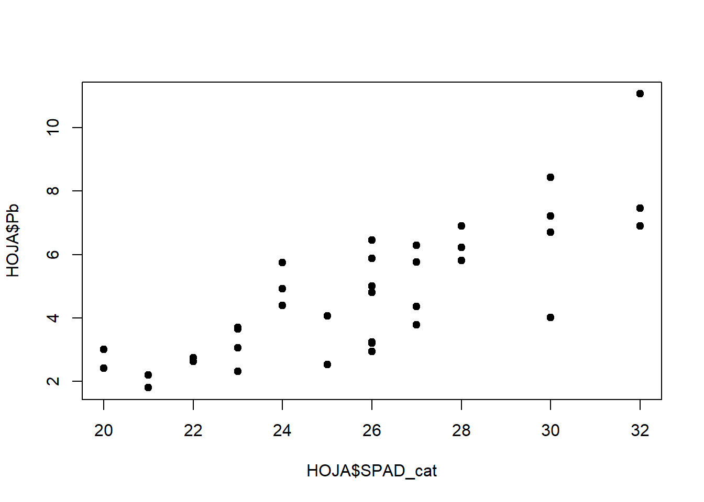
Y corremos nuevamente el modelo, ahora sí podemos hacer un test para homogeneidad de varianzas y un boxplot de los residuos (errores):
fit2 <-lm(Pb ~ SPAD_cat, data = HOJA)
# Gráfico de supuestos
layout(matrix(1:4, 2, 2)); plot(fit2) ;layout(1)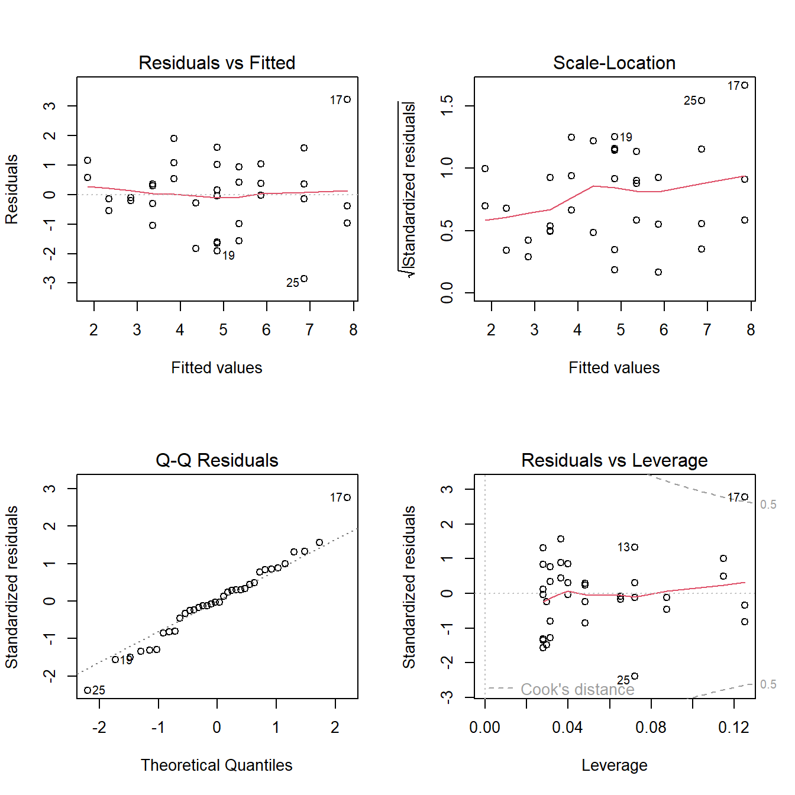
shapiro.test(resid(fit2))
Shapiro-Wilk normality test
data: resid(fit2)
W = 0.98305, p-value = 0.8429bartlett.test(resid(fit2)~HOJA$SPAD_cat)
Bartlett test of homogeneity of variances
data: resid(fit2) by HOJA$SPAD_cat
Bartlett's K-squared = 13.039, df = 10, p-value = 0.2215boxplot(residuals(fit2,type="pearson")~HOJA$SPAD_cat,
ylab="Pearson standarized residuals")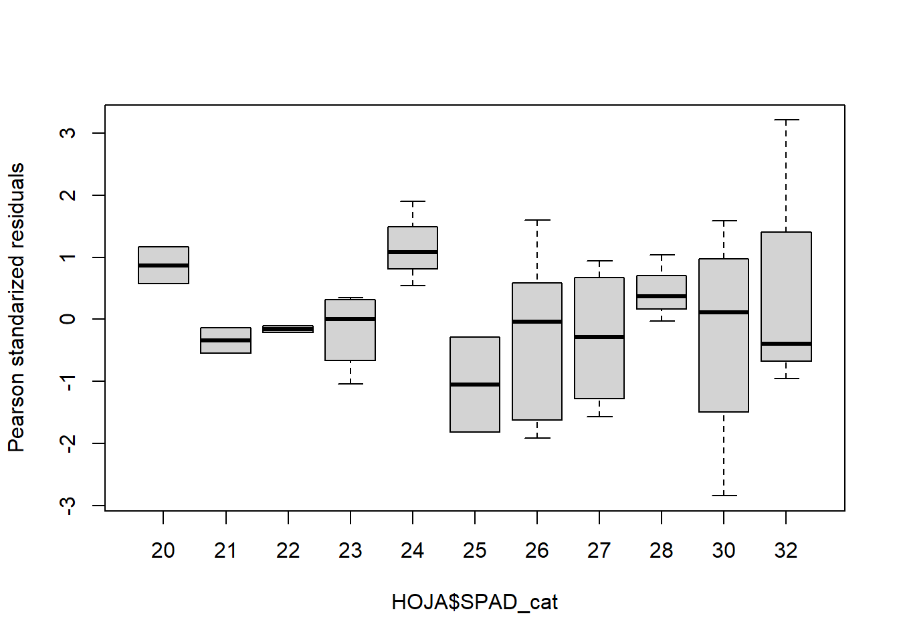
# Tablas
summary(fit2)
Call:
lm(formula = Pb ~ SPAD_cat, data = HOJA)
Residuals:
Min 1Q Median 3Q Max
-2.8450 -0.6495 -0.0374 0.6626 3.2119
Coefficients:
Estimate Std. Error t value Pr(>|t|)
(Intercept) -8.17737 1.63362 -5.006 1.69e-05 ***
SPAD_cat 0.50105 0.06273 7.988 2.62e-09 ***
---
Signif. codes: 0 '***' 0.001 '**' 0.01 '*' 0.05 '.' 0.1 ' ' 1
Residual standard error: 1.24 on 34 degrees of freedom
Multiple R-squared: 0.6524, Adjusted R-squared: 0.6421
F-statistic: 63.8 on 1 and 34 DF, p-value: 2.623e-09Vemos que el resultado es muy similar al de antes, por supuesto.
El modelo de regresión lineal puede ser complejizado agregando más variables regresoras. El planteo del modelo es muy similar, agregando las nuevas variables y su interacción, por ejemplo para dos regresoras: lm(y~ x1 + x2 + x1*x2). Este tipo de modelos exceden los alcances de este taller.
2.3 Actividad 2
- A partir de la base de datos creada en el punto 1 de la actividad 1, realice un modelo de regresión que relaciones el PS con la acumulación de Zn en tallos.
- Ponga a prueba los supuestos y concluya.
2.4 Gráficos de puntos
En este apartado veremos cómo una vez que tengamos una correlación o regresión lineal hecha visualizarla gráficamente de un modo agradable.
2.4.1 Función plot
La forma más rápida es mediante la función plot de Rbase
plot(Pb~SPAD, data = HOJA, pch=15)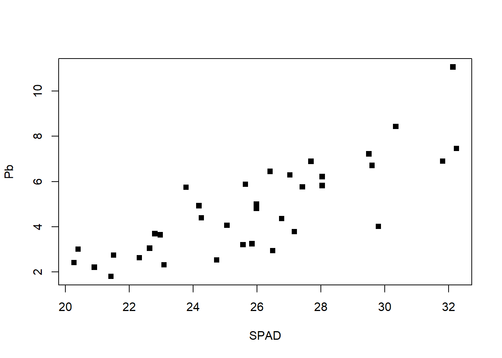
2.4.2 Función lineplot.CI (paquete sciplot)
Con el paquete sciplot, podemos crear gráficos de manera rápida y estéticamente más trabajada con la función lineplot.CI:
lineplot.CI(x.factor = SPAD,
response = Pb,
data = HOJA)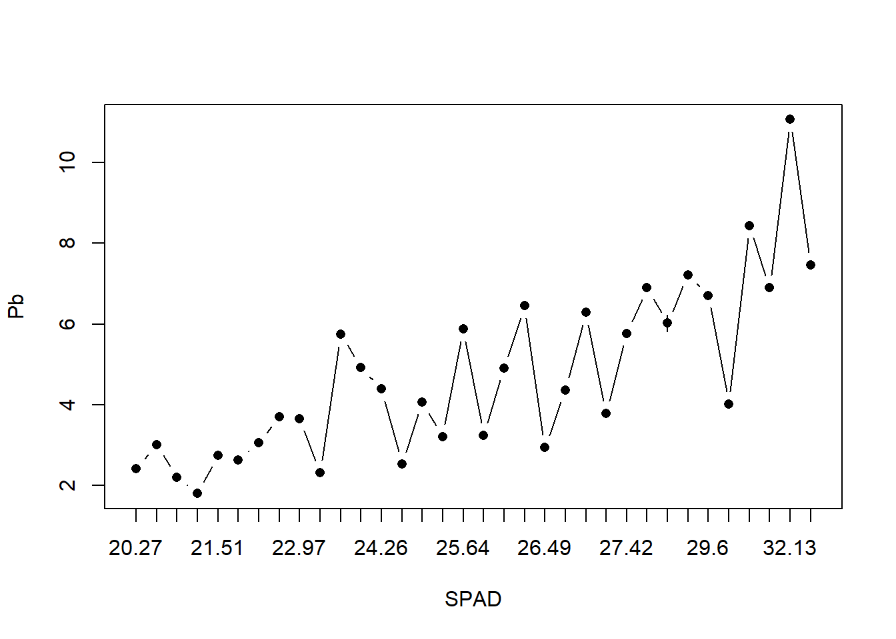
Si queremos ver qué otras opciones ofrece la función, podemos ir a buscar la ayuda de la misma. Para ver la ayuda de la función ejecutamos:
?lineplot.CIY se nos abrirá la ayuda en la ventana 4 de RStudio. Allí vemos una serie de parámetros que podemos modificar. A su vez podemos subdividir en grupos, veamos un ejemplo:
lineplot.CI(x.factor = SPAD,
response = Pb,
data = HOJA, # dataset
group = ET, # criterio de agrupamiento
col= c("seagreen","orange1"), # color
las=1, # cambia la inclinación de los números de eje
ylim = c(0,12)) # establece los límites del eje y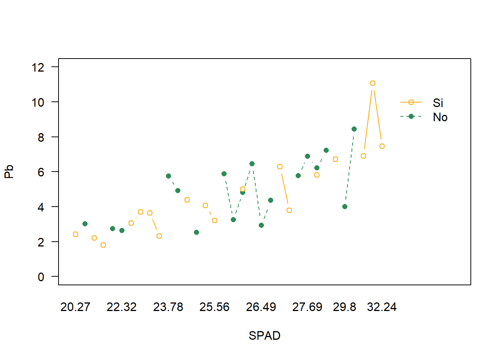
Todo lo que creamos con la función se denominan parámetros primarios del gráfico. Luego se le pueden modificar parámetros secundarios como
lineplot.CI(x.factor = SPAD,
response = Pb,
data = HOJA,
ylab = "")
# aquí agregamos los parámetros secundarios
title(ylab= "Pb", line = 2.5) # título del eje eligiendo la distancia
abline(h=2, col="red", lty=2) # línea horizontal
abline(v=25, col="red", lty=2) # línea vertical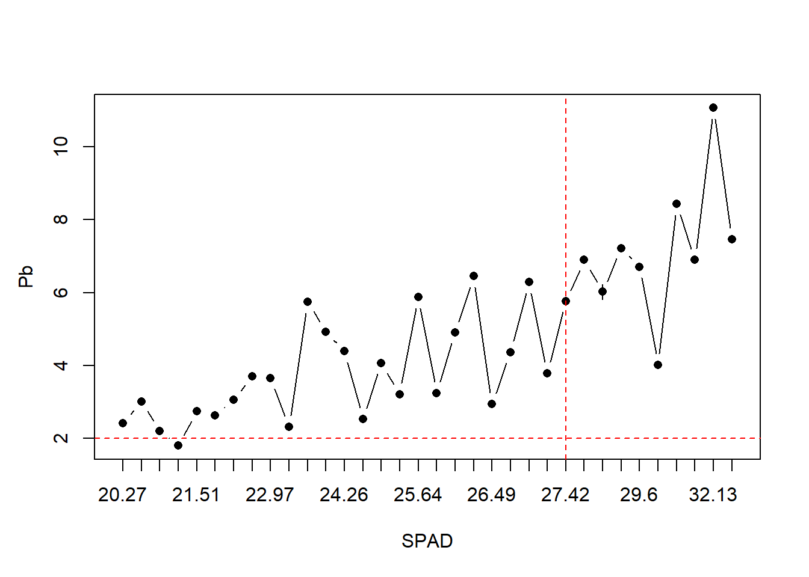
2.4.3 Función ggplot (paquete ggplot2)
Finalmente introduciremos el paquete gráfico ggplot2. Si bien es un poco más complicado de aprender y cada gráfico puede requerirnos más tiempo, es súper versátil y permite hacer infinidad de cosas. La lógica de trabajo es un poco diferente a las anteriores, ya que aquí se trabaja en capas que se van separando por el signo +. Todo lo que veamos en este apartado se aplica a casi cualquier tipo de gráfico con ggplot, por lo que nos servirá también para variables categóricas.
ggplot2 maneja una composición por capas. En la primera capa debemos especificar primero la base de datos a utilizar, y luego el aesthetic, es decir, la estructura que tendrán nuestros datos. En una segunda capa elegiremos el geom que dirá la forma que tomará nuestro gráfico. Con estas capas mínimas podemos obtener un gráfico.
Por ejemplo creamos el gráfico de puntos:
G1 <- ggplot(data = HOJA, # el data set
aes(x = SPAD, y = Pb)) + # x e y dentro de aes
geom_point() # indica que el gráfico es de puntos
G1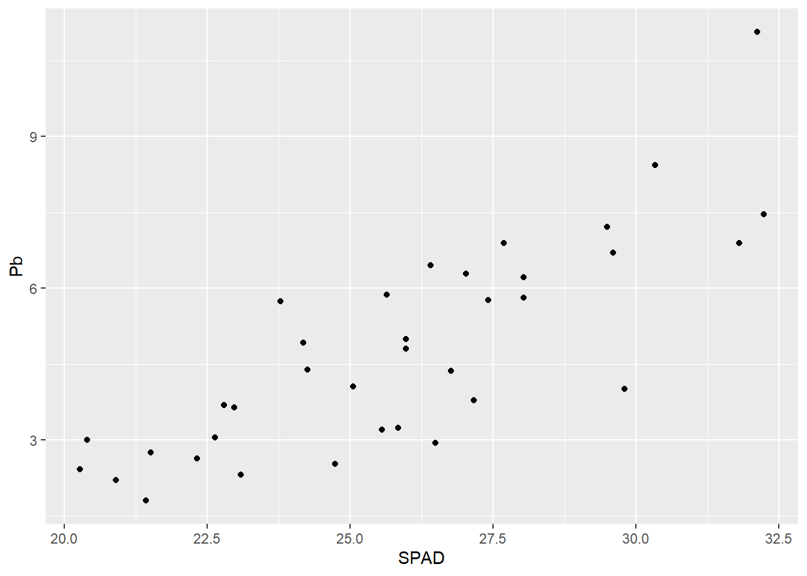
A partir de acá, podemos ir agregando en sucesivas líneas y separados por signo + las características que queramos modificar. Por ejemplo, podemos cambiar el tema general del gráfico (veremos mucho más detalle más adelante) o modificar el aspecto de los puntos dentro del geom:
ggplot(HOJA, aes(SPAD, Pb)) +
geom_point() +
theme_bw()
ggplot(HOJA, aes(SPAD, Pb)) +
geom_point(size = 3, col = "yellow") + # cambiamos tamaño y color
theme_dark()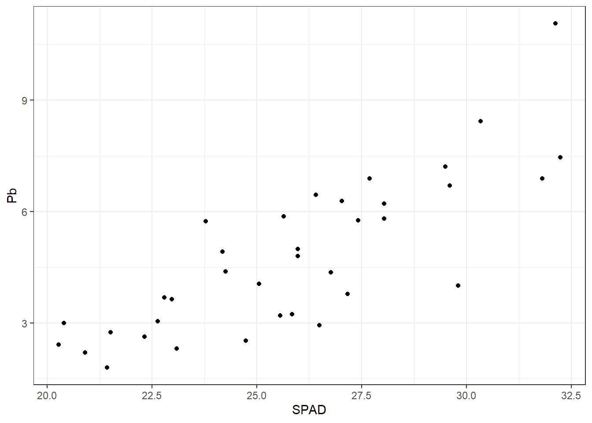
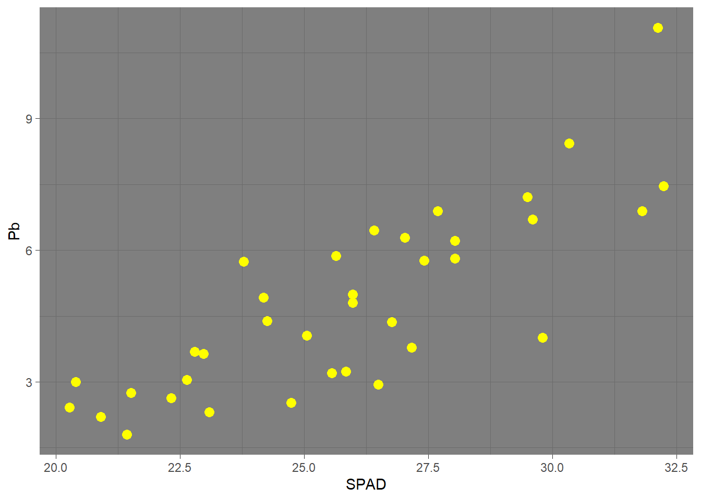
Podemos agregar nuevas capas con otros geoms al mismo gráfico. Así se puede agregar una línea que una los puntos (con un geom_line) o una línea de regresión con su intervalo de confianza (geom_smooth). Es importante mencionar que el orden en el que incluyamos las capas afecta al resultado, la última aparecerá más arriba:
G1 + geom_line(col="deeppink3") # cambiamos el color en los parámetros del geom
G1 + geom_smooth(method = "lm")`geom_smooth()` using formula = 'y ~ x'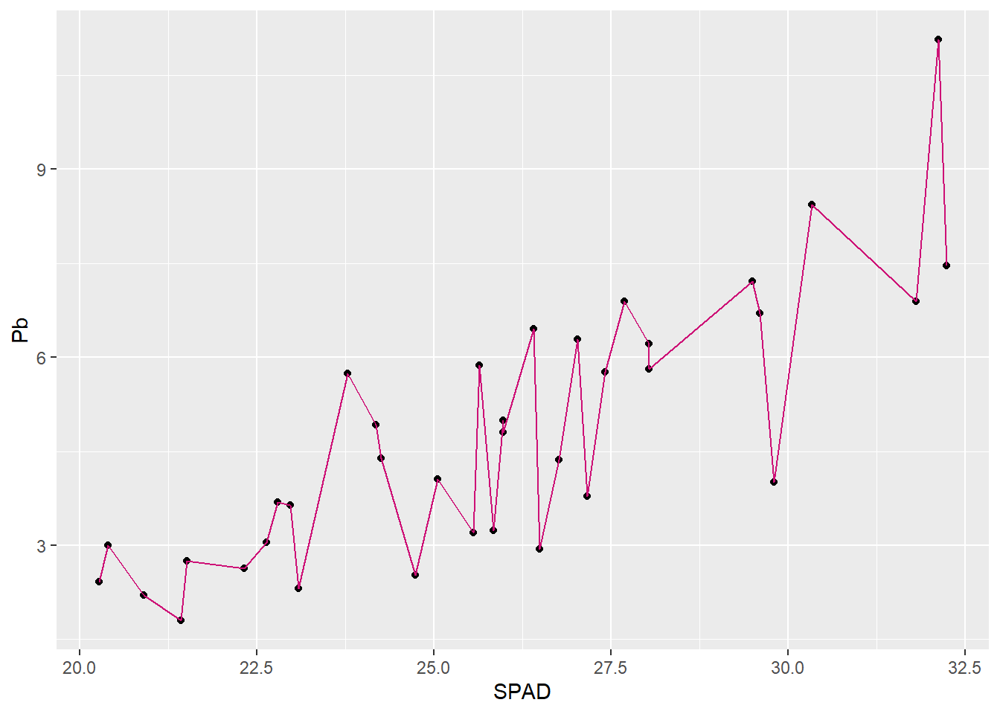
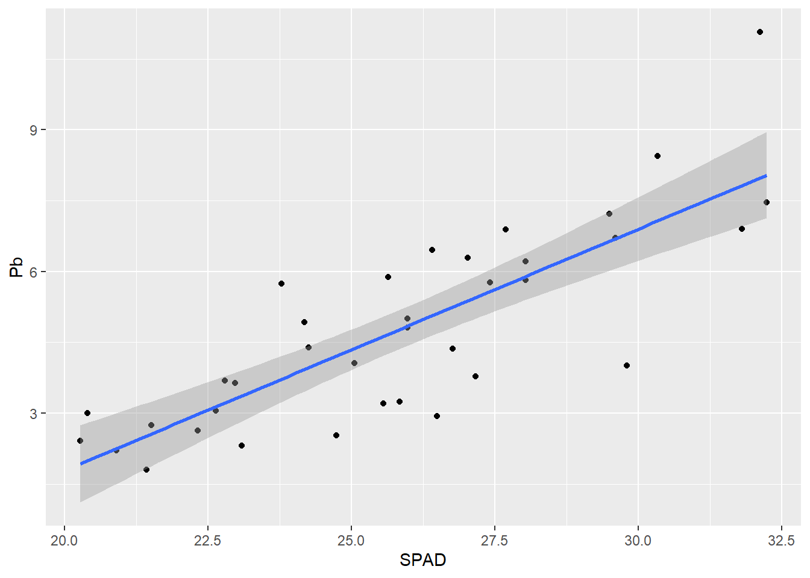
Al igual que hicimos con lineplot.CI, podemos agrupar los datos por algún factor según alguna característica que elijamos (color, forma, relleno, tamaño, etc.). Por ejemplo si queremos distinguir los puntos por color según el estrés térmico:
G2 <- ggplot(HOJA,
aes(SPAD, Pb,
col = ET)) + # agregamos en el aes por qué parámetro dividir
geom_point()
G2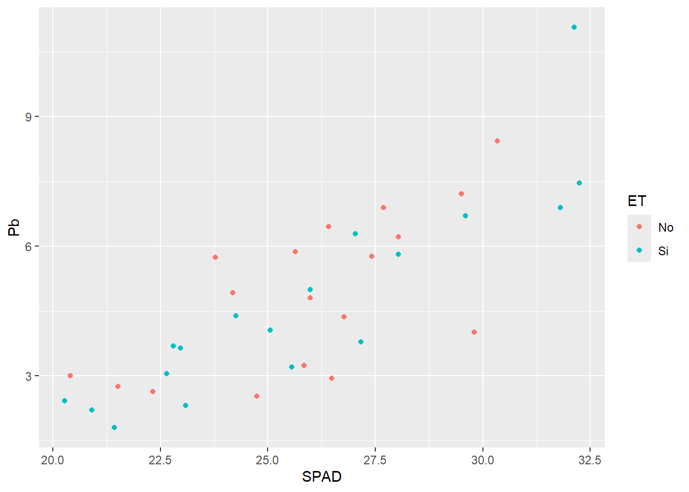
Ahora si queremos graficar la variable discreta donde para cada valor del eje x tenemos varios valores de y, por defecto geom_point grafica los puntos individualizados, a diferencia de lo que hacía lineplot.CI
ggplot(HOJA, aes(SPAD_cat, Pb)) +
geom_point()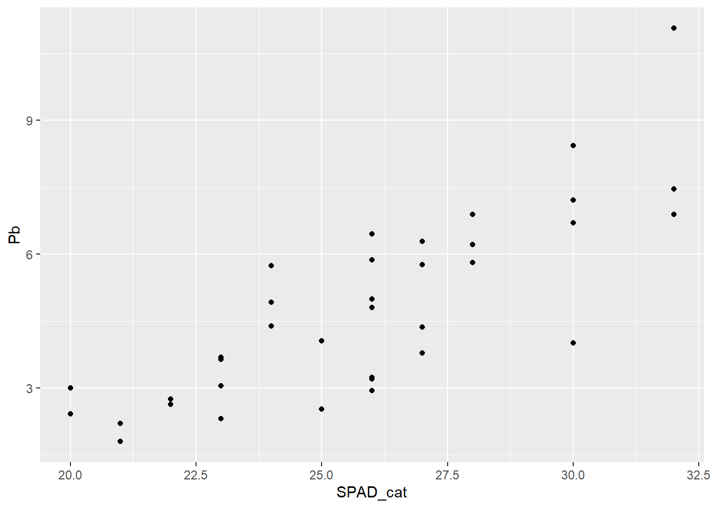
Entonces para graficar la media y el error estándar, incluimos una capa de stat, que realiza cálculos con la variable respuesta. En este caso, stat_summary nos permite graficar el valor medio:
ggplot(data = HOJA,
aes(SPAD_cat, Pb))+
stat_summary(fun=mean, geom="point") +
stat_summary(fun.data=mean_se, geom ='errorbar')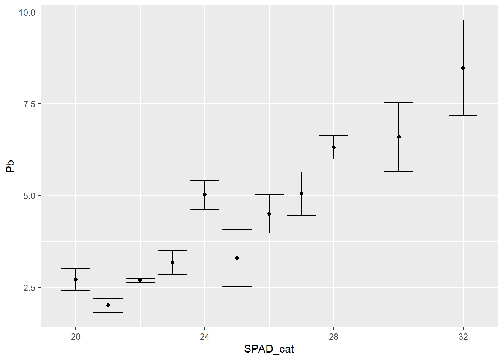
# podemos mejorar un poco la estética
ggplot(data = HOJA,
aes(SPAD_cat, Pb))+
stat_summary(fun=mean, geom="point", size=5, col = "azure4") +
stat_summary(fun.data=mean_se, geom ='errorbar', width=0.2)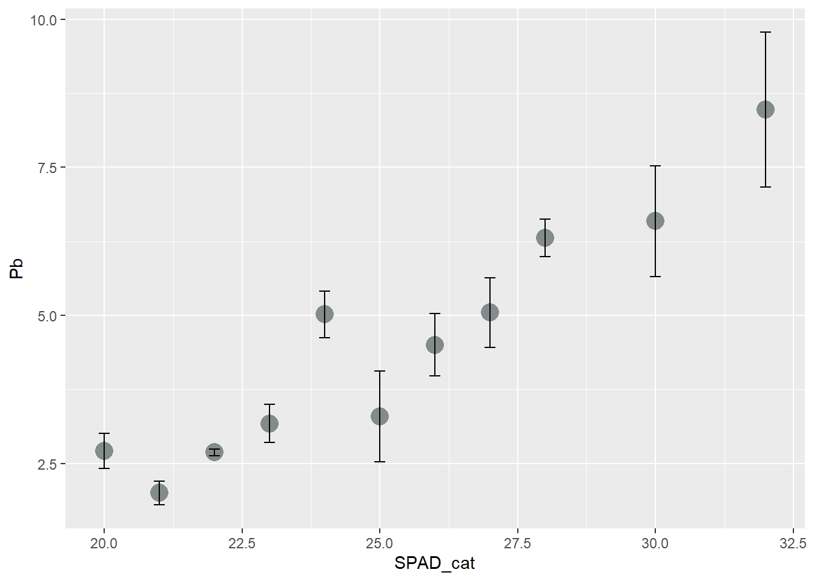
2.4.4 Actividad 3
- Realice una representación gráfica del modelo de regresión realizado en la actividad 2. Incorpore en la gráfica una clasificación por estrés térmico por color.
3 Unidad 3. Análisis y representación de datos categóricos
3.1 ANOVA a 1 factor
Ahora vamos a trabajar con los datos con variables categóricas. Cuando incorporamos un factor con diferentes niveles y nos interesa comparar si hay diferencias entre los efectos de los distintos niveles de uno o más factores uno de los análisis más utilizados es el análisis de la varianza. Comenzaremos con el caso de un único factor.
Este análisis plantea la comparación de medias muestrales a partir de la varianza que presentan los datos dentro de cada grupo (de allí su nombre). Al igual que el modelo de regresión, presenta supuestos a cumplirse (normalidad de la variable y homogeneidad de las varianzas).
El planteo del modelo en R será de la misma manera que la regresión, ya que se trata de otro modelo lineal. En nuestro ejemplo trabajaremos evaluando el efecto del estrés térmico (inicialmente) en el peso seco de semillas de la variedad Alim 3,14. Para ello armaremos la base de datos (doy como ejemplo algunas formas de armarla en base a las que ya tenemos):
SEM_Alim <- SEM %>% filter(GT == "Alim 3,14")
SEM_Alim <- ALIM %>% filter(Organo == "Semilla")
SEM_Alim <- ALIM_VyS %>% filter(Organo == "Semilla")
SEM_Alim <- ALIM_VyS %>% filter(Organo != "Vaina") # signo diferente aY ahora sí corremos el modelo y ponemos a prueba los supuestos de igual manera que hiciéramos anteriormente:
fit3 <-lm(PS ~ ET, data = SEM_Alim)
# Gráfico de supuestos
layout(matrix(1:4, 2, 2)); plot(fit3) ;layout(1)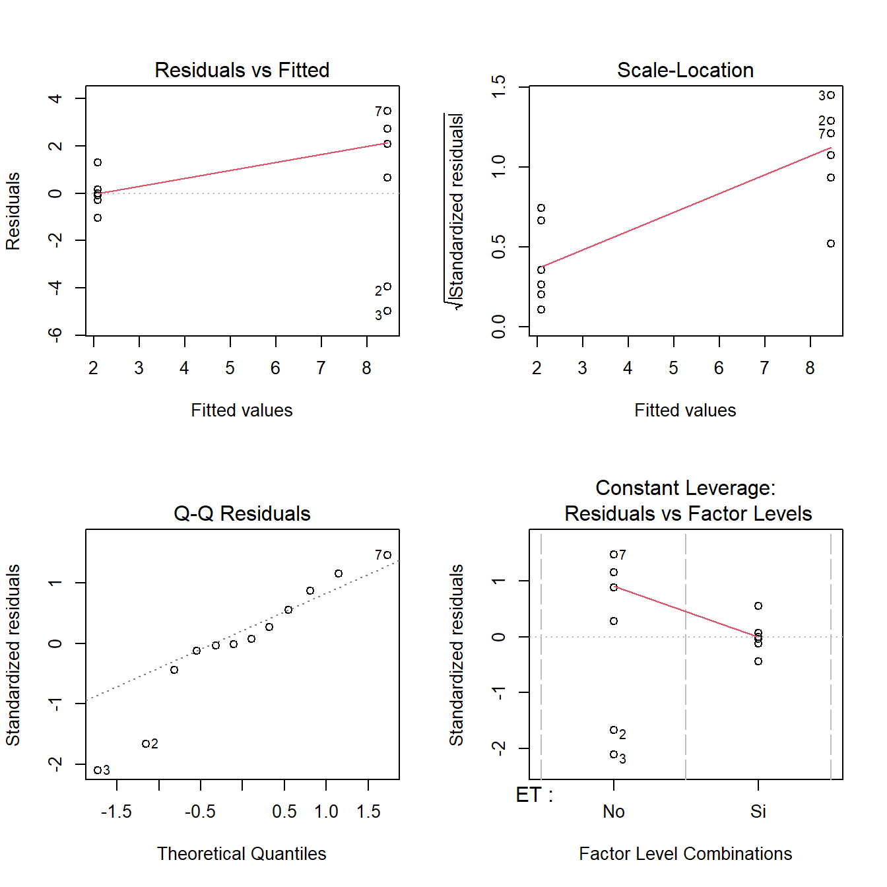
shapiro.test(resid(fit3))
Shapiro-Wilk normality test
data: resid(fit3)
W = 0.92632, p-value = 0.3428bartlett.test(resid(fit3)~SEM_Alim$ET) # no hay homogeneidad
Bartlett test of homogeneity of variances
data: resid(fit3) by SEM_Alim$ET
Bartlett's K-squared = 8.139, df = 1, p-value = 0.004332Como vemos hay normalidad de errores pero no homogeneidad de varianza. Si bien esto pudiera no ser un problema muy grande (el modelo sobreestimará la varianza general y tendrá menos potencia), podemos transformar la variable respuesta:
# Probamos transformando por el logaritmo
fit3 <-lm(log(PS) ~ ET, data = SEM_Alim)
layout(matrix(1:4, 2, 2)); plot(fit3) ;layout(1)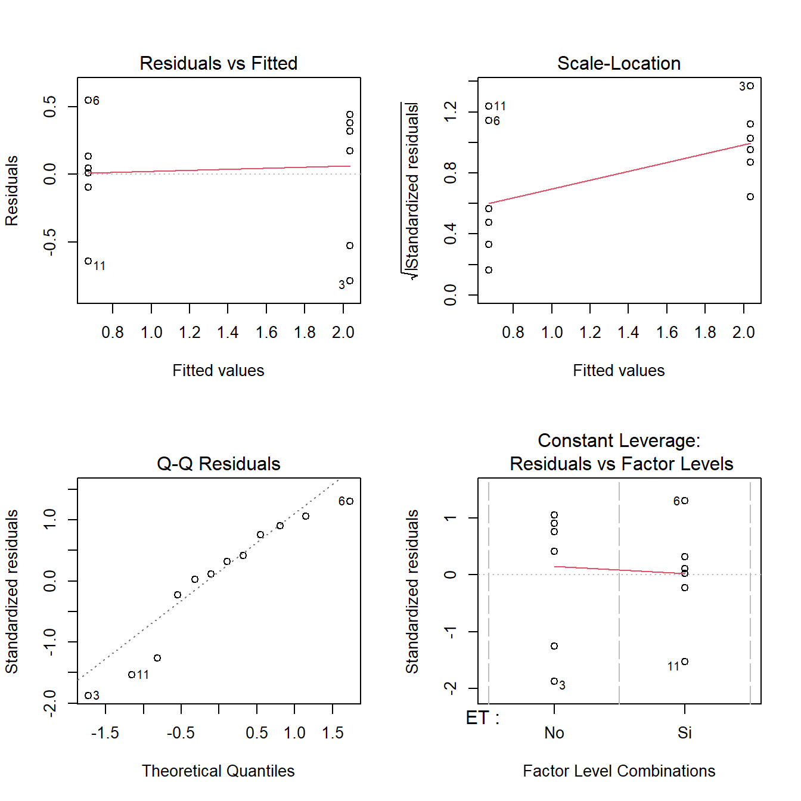
shapiro.test(resid(fit3))
Shapiro-Wilk normality test
data: resid(fit3)
W = 0.91186, p-value = 0.2254bartlett.test(resid(fit3)~SEM_Alim$ET)
Bartlett test of homogeneity of variances
data: resid(fit3) by SEM_Alim$ET
Bartlett's K-squared = 0.41623, df = 1, p-value = 0.5188boxplot(residuals(fit3,type="pearson")~SEM_Alim$ET,
ylab="Pearson standarized residuals")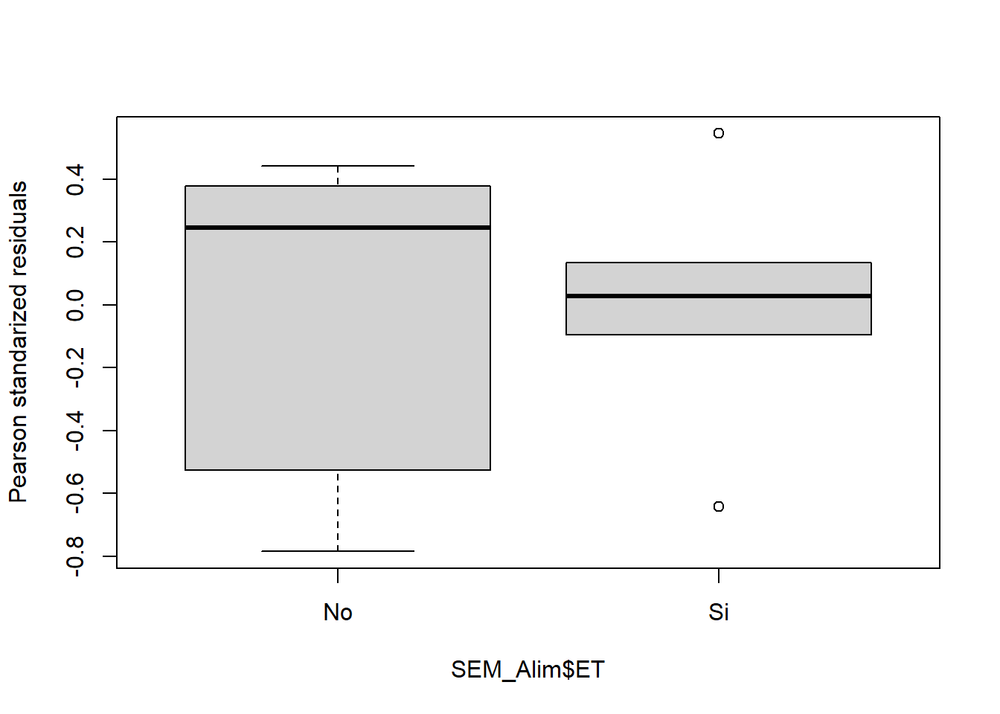
# ahora sí se cumpleEntonces ahora que ya sabemos de la validez del modelo, pediremos la tabla del ANOVA para ver si existen o no diferencias significativas:
anova(fit3)Analysis of Variance Table
Response: log(PS)
Df Sum Sq Mean Sq F value Pr(>F)
ET 1 5.5709 5.5709 26.502 0.0004327 ***
Residuals 10 2.1020 0.2102
---
Signif. codes: 0 '***' 0.001 '**' 0.01 '*' 0.05 '.' 0.1 ' ' 1Vemos que arroja un p mucho menor a 0,05, por lo que diremos que al menos una media es diferente de las otras (como en este caso son dos niveles, una de la otra). Para saber cuál es diferente de cuál, como test a posteriori podemos correr el test de Tukey. Para ello utilizamos la función HSD.test del paquete agricolae:
# Tukey
tukey1 <- HSD.test(fit3,"ET")
tukey1$groups log(PS) groups
No 2.0346143 a
Si 0.6719101 bVemos que sin estrés térmico las semillas tenían mayor peso seco.
3.2 ANOVA bifactorial
Para correr un modelo de ANOVA con 2 factores diferentes y evaluar su interacción debemos poner ambas variables separadas por *. Analizaremos el mismo modelo de antes pero incorporando además el efecto del CO2 atmosférico:
SEM_Alim$CO2 <- as.factor(SEM_Alim$CO2) # convertimos a factor
fit4 <-lm(PS ~ ET*CO2, data = SEM_Alim)De la misma manera que antes, probamos los supuestos:
# Gráfico de supuestos
layout(matrix(1:4, 2, 2)); plot(fit4) ;layout(1)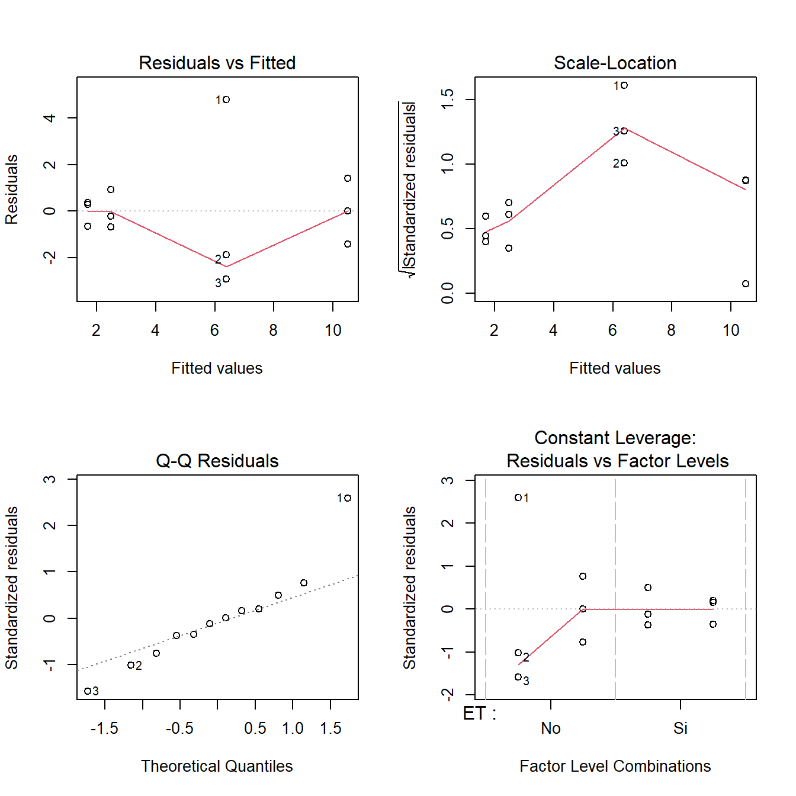
# la homogeneidad se prueba para cada factor
bartlett.test(resid(fit4)~SEM_Alim$ET)
bartlett.test(resid(fit4)~SEM_Alim$CO2)
boxplot(residuals(fit4,type="pearson")~SEM_Alim$ET,
ylab="Pearson standarized residuals")
boxplot(residuals(fit4,type="pearson")~SEM_Alim$CO2,
ylab="Pearson standarized residuals")
Bartlett test of homogeneity of variances
data: resid(fit4) by SEM_Alim$ET
Bartlett's K-squared = 7.6109, df = 1, p-value = 0.005802
Bartlett test of homogeneity of variances
data: resid(fit4) by SEM_Alim$CO2
Bartlett's K-squared = 4.1568, df = 1, p-value = 0.04147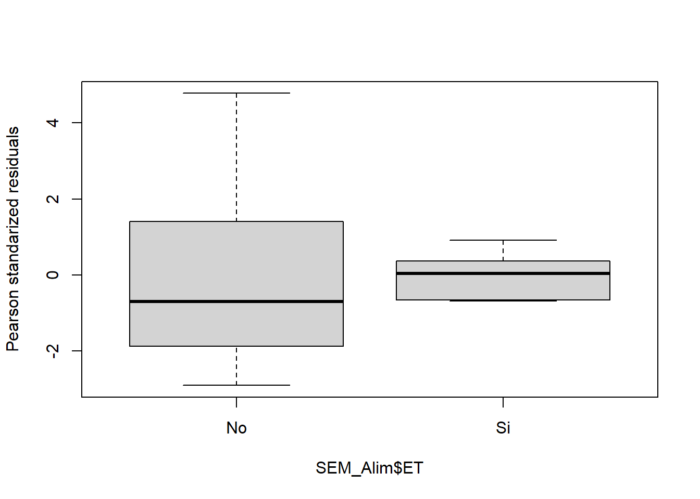
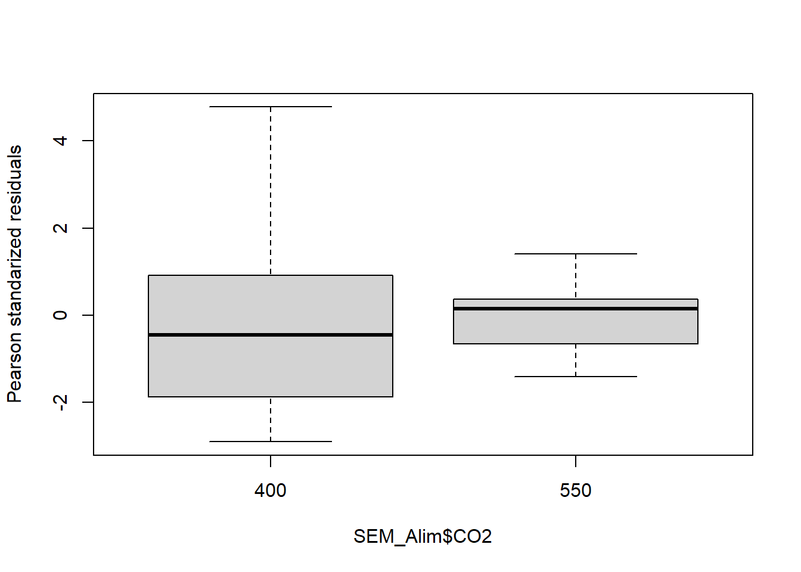
Una vez comprobados los supuestos, para ver los resultados debemos ejecutar el comando anova. También podemos ejecutar el summary, que nos permitirá ver contrastes con respecto al primer nivel del factor:
# Tablas
anova(fit4)Analysis of Variance Table
Response: PS
Df Sum Sq Mean Sq F value Pr(>F)
ET 1 121.73 121.731 23.9217 0.001207 **
CO2 1 8.30 8.300 1.6311 0.237373
ET:CO2 1 17.91 17.910 3.5195 0.097500 .
Residuals 8 40.71 5.089
---
Signif. codes: 0 '***' 0.001 '**' 0.01 '*' 0.05 '.' 0.1 ' ' 1summary(fit4)
Call:
lm(formula = PS ~ ET * CO2, data = SEM_Alim)
Residuals:
Min 1Q Median 3Q Max
-2.9033 -0.8675 -0.1083 0.5008 4.7767
Coefficients:
Estimate Std. Error t value Pr(>|t|)
(Intercept) 6.393 1.302 4.909 0.00118 **
ETSi -3.927 1.842 -2.132 0.06560 .
CO2550 4.107 1.842 2.230 0.05633 .
ETSi:CO2550 -4.887 2.605 -1.876 0.09750 .
---
Signif. codes: 0 '***' 0.001 '**' 0.01 '*' 0.05 '.' 0.1 ' ' 1
Residual standard error: 2.256 on 8 degrees of freedom
Multiple R-squared: 0.7842, Adjusted R-squared: 0.7033
F-statistic: 9.691 on 3 and 8 DF, p-value: 0.004853Vemos que el resultado del ANOVA es significativo únicamente para el factor ET, por lo que el modelo correcto sería el unifactorial. Sin embargo mostraremos los test a posteriori para el caso bifactorial:
tukey1 <- HSD.test(fit4,"ET")
tukey1$groups PS groups
No 8.446667 a
Si 2.076667 btukey2 <- HSD.test(fit4,"CO2")
tukey2$groups PS groups
550 6.093333 a
400 4.430000 atukey3 <- HSD.test(fit4,c("ET","CO2"))
tukey3$groups PS groups
No:550 10.500000 a
No:400 6.393333 ab
Si:400 2.466667 b
Si:550 1.686667 b3.3 Actividad 4
Realice un ANOVA bifactorial con los factores ET y CO2 pero para el peso seco de semillas de los cultivares ES Mentor y Sigalia. ¿Se observa la misma respuesta que para el cultivar Alim 3,14?
3.4 Gráficos de barras
Nuevamente, veremos varias formas de hacerlos empleando tanto sciplot como ggplot2.
3.4.1 bargraph.CI (sciplot)
Al igual que para los gráficos de puntos, el paquete sciplot nos brinda una función para realizar rápidamente un gráfico de barras, sin necesidad de ejecutar ningún cálculo previo. Por ejemplo:
bargraph.CI(x.factor = ET, response = PS, group = CO2,
ylim = c(0,12), legend = T,
data = SEM_Alim, col= c("honeydew","honeydew4"),
las=1, xlab="Estrés térmico",
ylab= "Peso seco",
cex.axis=0.8);abline(h=0)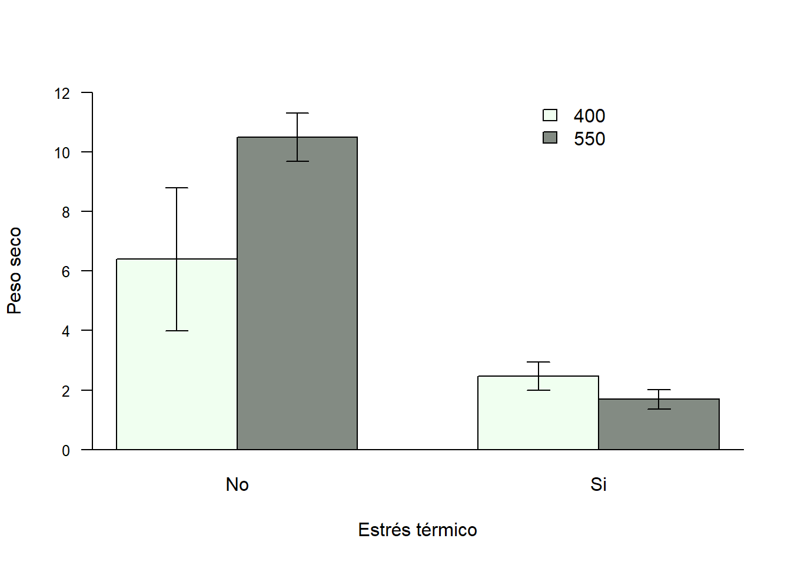
Los parámetros a modificar son los mismos que vimos anteriormente para los gráficos de puntos.
3.4.2 geom_col (ggplot2)
Ggplot2 nos ofrece dos geoms para hacer gráficos de barras (geom_col y geom_bar). Utilizaremos en este taller únicamente geom_col.
Un inconveniente al realizar estos gráficos, es que por defecto el geom no nos calcula la media y los desvíos de la variable a graficar, sino que nos representa directamente los datos que le demos. Sin embargo, una de las principales virtudes de ggplot y del entorno tidyverse es la posibilidad realizar todos los cambios que creamos convenientes a nuestro database y luego graficar la base modificada sin necesidad de haber creado explícitamente un objeto nuevo. ¿Qué ventaja presenta esto? Nos permite manipular fácilmente la base de datos sin crear una lista muy larga de objetos que luego se nos complique identificar cuál es cuál. Así, a modo de ejemplo,
Entonces, para realizar el mismo gráfico que hicimos con bargraph.CI, debemos calcular la media y el error estándar de la variable PS de semillas:
SEM_Alim %>% select(CO2, ET, PS) %>% # seleccionamos las columnas involucradas
group_by(CO2, ET) %>% # definimos criterios de agrupamiento
summarise_all(list(mean,se)) # pedimos media y error estándar# A tibble: 4 × 4
# Groups: CO2 [2]
CO2 ET fn1 fn2
<fct> <chr> <dbl> <dbl>
1 400 No 6.39 2.41
2 400 Si 2.47 0.476
3 550 No 10.5 0.811
4 550 Si 1.69 0.329Vemos que incorpora las columnas fn1 (que tiene los valores de las medias) y fn2 (con los errores estándares). A estos comandos creados se les anexa el gráfico:
SEM_Alim %>% select(CO2, ET, PS) %>%
group_by(CO2, ET) %>%
summarise_all(list(mean,se)) %>%
ggplot(aes(ET, fn1,
fill=CO2))+ # en este caso el parámetro de color lo define fill
geom_col()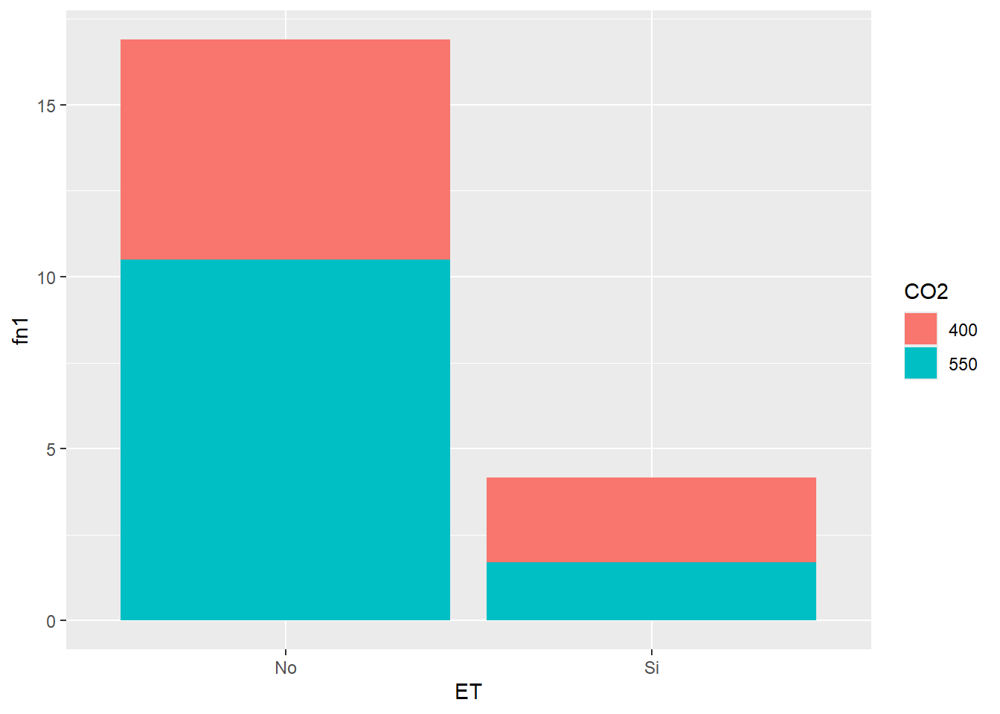
Como vemos, la barras se apilan. Para que vaya una al lado de la otra, debemos cambiar el parámetro position= “dodge” dentro del geom (por defecto está en identity). Además agregaremos las barras de error:
G3 <- SEM_Alim %>% select(CO2, ET, PS) %>%
group_by(CO2, ET) %>%
summarise_all(list(mean,se)) %>%
ggplot(aes(ET, fn1, fill=CO2))+
geom_col(position = "dodge") +
geom_errorbar(aes(ymin=fn1-fn2, ymax=fn1+fn2), width=.1,
position = position_dodge(.9))
G3Una alternativa para no tener que realizar manualmente la transformación de la base de datos cuando queremos graficar medias y desvíos es usar stat_summary. Esta función tiene una nomenclatura algo distinta a las otras y permite especificar diferentes geoms. Veamos para realizar el último gráfico:
ggplot(SEM_Alim, aes(ET, PS, fill=CO2))+
stat_summary(fun=mean, geom="col",
position = position_dodge(0.9)) +
stat_summary(fun.data=mean_se, geom ='errorbar', width=0.2,
position = position_dodge(0.9))Sin embargo, si queremos agregar las letras del Tukey realizado, será más adecuado hacerlo con el cálculo previo de medias y error estándar. Esto es así ya que nos permite ubicar adecuadamente las letras en la altura correspondiente a cada columna. Las letras las incorporaremos de forma manual con un nuevo geom, el geom_text:
G3 + geom_text(aes(y = fn1 + fn2,
label= c("ab", "b", "a", "b")),
position=position_dodge(0.9),
vjust=-.5) # ajuste vertical de la posición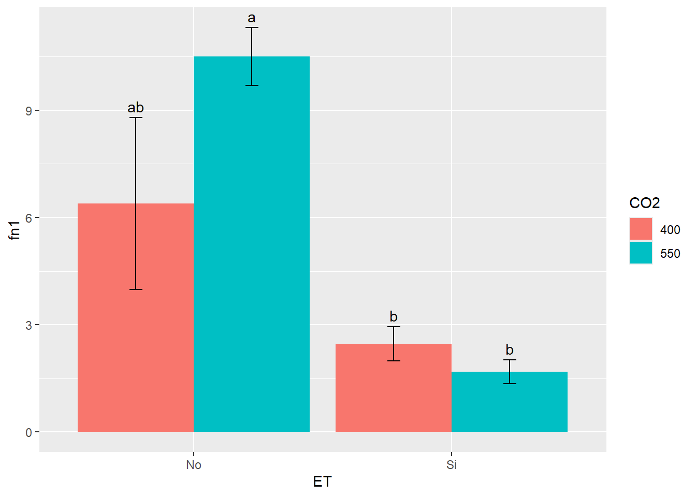
3.4.3 Gráfico de barras apiladas y apilado porcentual
Veremos ahora cómo realizar un gráfico de barras apilado y un apilado porcentual. Supongamos como ejemplo que queremos graficar el peso seco de los órganos evaluados en plantas de soja de la variedad Alim 3,14. Para ello, lo primero que debemos hacer es “ordenar” los niveles del factor como los queramos mostrar. En nuestro caso, iremos de abajo hacia arriba de la planta:
ALIM$Organo <- factor(ALIM$Organo,
levels = c("Tallo","Hoja","Vaina","Semilla")) Una vez hecho esto, vamos a transformar nuestra base de datos utilizando la función ddplydel paquete plyr. Esta función tiene un uso particular que excede el contenido de este curso, veremos simplemente cómo utilizarla con el ejemplo:
library(plyr)
ALIM_apilado <- ALIM %>% select(Organo, ET, PS) %>%
group_by(ET, Organo) %>%
summarise_all(funs(mean,se)) %>%
ddply(c("ET"), transform,
percent_PS = mean/ sum(mean) * 100) %>%
ddply(c("ET"), transform, label_y=cumsum(mean)) %>%
ddply(c("ET"), transform, label_y_perc=cumsum(percent_PS)) %>%
mutate(Organo=factor(Organo,
levels=c("Semilla", "Vaina",
"Hoja", "Tallo")))
# notar que volvemos a invertir el orden | ET | Organo | mean | se | percent_PS | label_y | label_y_perc |
|---|---|---|---|---|---|---|
| No | Tallo | 4.680000 | 0.5586889 | 17.18587 | 4.68000 | 17.18587 |
| No | Hoja | 9.740000 | 0.9862048 | 35.76718 | 14.42000 | 52.95306 |
| No | Vaina | 4.365000 | 0.7491584 | 16.02913 | 18.78500 | 68.98219 |
| No | Semilla | 8.446667 | 1.4605996 | 31.01781 | 27.23167 | 100.00000 |
Como se puede ver, además de calcular media y error estándar, se crearon las variables label_y (que nos da el acumulado parcial, nos servirá como posición para poner una etiqueta) y label_y_perc para el acumulado porcentual. Ahora podemos ejecutar los gráficos y agregar además el valor de cada columna apilada:
G4 <- ALIM_apilado %>%
ggplot(aes(ET, mean, fill=Organo))+
geom_col() +
geom_text(aes(label=round(mean, 2), # agregamos el valor
y = label_y)) # indica la posición
G4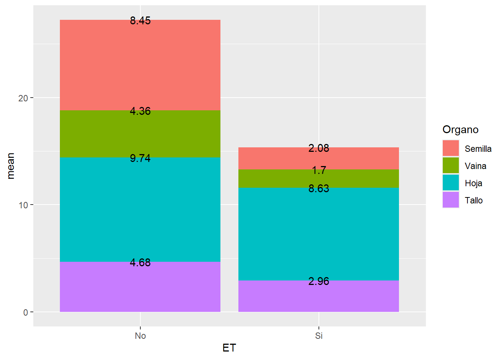
G5 <- ALIM_apilado %>%
ggplot(aes(ET, percent_PS, fill=Organo))+
geom_col() +
geom_text(aes(label=round(percent_PS, 2), y = label_y_perc), vjust=2)
G5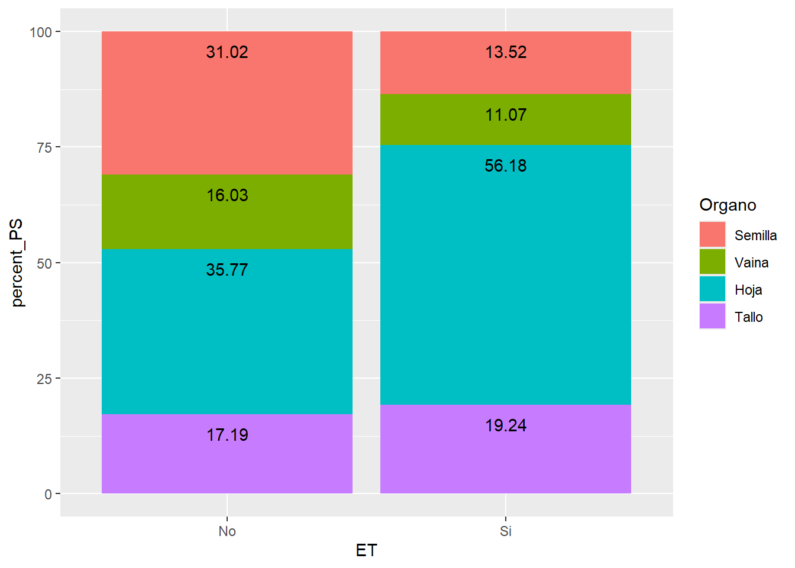
3.5 Boxplot
Los gráficos tipo boxplot también son formas frecuentes de presentar variables numéricas con distintos factores de clasificación. Veremos algunas formas de hacerlo.
3.5.1 Función boxplot
La función derivada de plot para hacer gráficos de barras es boxplot. Se utiliza de forma similar a los gráficos ya vistos:
boxplot(PS~ET, data = SEM_Alim,
ylim = c(0,12),
xlab="Estrés térmico",
ylab= "Peso seco",
las=1, cex.axis=0.8)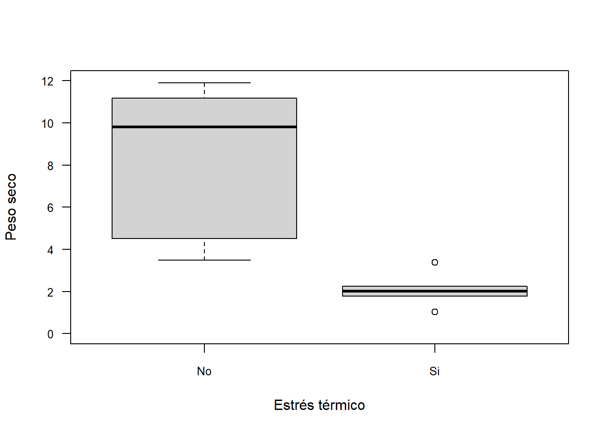
3.5.2 geom_boxplot
El paquete ggplot2 nos ofrece una vez maś una forma muy versátil de crear gráficos de cajas. La función en cuestión es geom_boxplot que, a diferencias de geom_col, no requiere que realicemos ningún cálculo previo. De esta manera podemos generar un gráfico con un par de líneas de código:
ggplot(SEM_Alim, aes(ET, PS))+
geom_boxplot()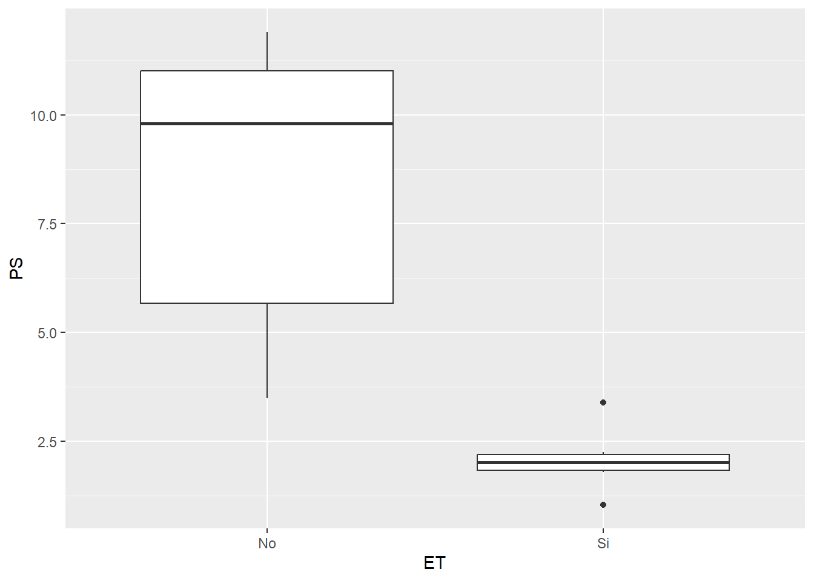
Si vemos con atención a este gráfico le faltan una serie de cosas que podrían mejorarlo. Por un lado, los extremos de los cuartiles no tienen la marca de final, sino que simplemente termina la línea. Sumado a esto, podría interesarnos agregar el valor de la media, que no figura en el gráfico. Veamos como incorporarlos con la función ya vista stat_summary:
ggplot(SEM_Alim, aes(ET, PS))+
stat_boxplot(geom ='errorbar', width=0.2)+ #debemos colocarlo primero para que quede al fondo
geom_boxplot() +
stat_summary(fun=mean, geom="point")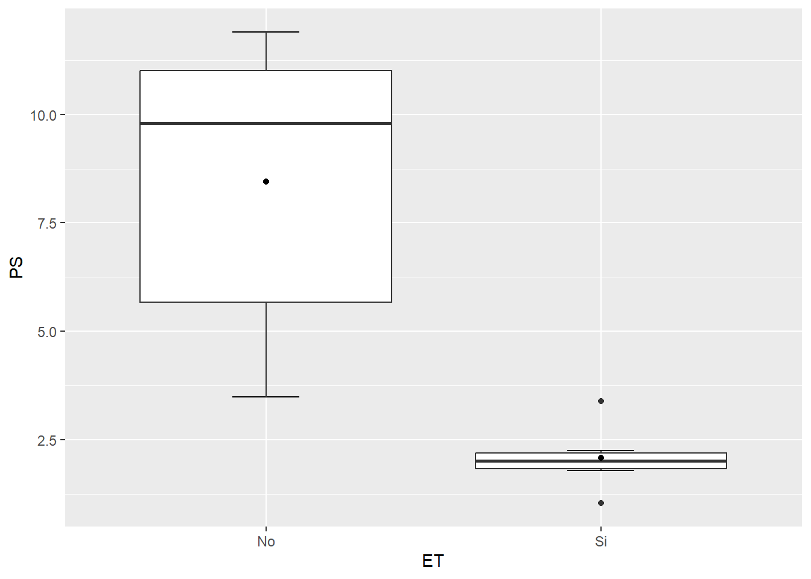
3.6 Actividad 5
Realice un gráfico de barras y un gráfico de cajas donde demuestre los resultados de los ANOVA realizados en la actividad 4.
4 Unidad 4. Estructura y estética de gráficos con ggplot2.
En esta unidad veremos una serie de contenidos relacionados con parámetros estructurales del gráfico (como las escalas, la división de la ventana gráfica, etc.) y estéticos que van desde la paleta de colores utilizada hasta el tema general.
Sin embargo, empezaremos viendo cómo exportar un gráfico para luego poder ir extrayendo los que iremos generando.
4.1 Exportación de resultados y gráficos
4.1.1 Exportación de datos
A este respecto, en mi práctica personal suelo leer los resultados desde la consola de R y, de ser necesario, realizo el pasaje manualmente de la información que me resulte de interés a un excel para su almacenamiento. De todas maneras, existen maneras de exportar diferentes formatos de archivos desde R. Cuando lo considero necesario, utilizo archivos del tipo csv. Así por ejemplo para exportar los datos de una regresión:
REG <- summary(fit1) # creamos un objeto para poder después extraer los coeficientes
write.csv2(REG$coefficients, "regresión prueba.csv")Como vemos, debo tener una tabla limpia y luego agregar el nombre y formato del archivo a crear. Lo mismo si quisiera extraer la tabla de un anova o un tukey:
write.csv2(anova(fit3), "anova prueba.csv")
write.csv2(tukey3$groups, "tukey prueba2.csv")Por supuesto, todo lo que exportemos se guardará en el directorio seteado al comienzo con setwd().
4.1.2 Exportación de gráficos
Este apartado es mucho más útil que el anterior y nos va a permitir extraer nuestras figuras que hayamos creado de una forma adecuada. Veremos 3 formas de exportar un gráfico.
4.1.2.1 Interfaz gráfica de RStudio
En la ventana 4 de RStudio se nos muestran los gráficos que hayamos generado. En la barra superior de esa ventana (siempre que estemos en la pestaña Plots) veremos la opción de Export. Si allí entramos en Save as image nos brinda una serie de opciones de exportación. Menciono esta posibilidad porque en algunos contextos puede sernos de utilidad. Como siempre que utilizamos la interfaz gráfica, esta tiene la desventaja de no nos deja ningún tipo de registro de lo que hayamos hecho, lo que no nos permite repetir la exportación en igualdad de condiciones, si es que fuera necesario.
4.1.2.2 Devices
Una segunda opción es el uso de Devices. Esta opción consiste en un código inicial donde definimos el formato, luego el gráfico y finalmente el cierre. Así por ejemplo para exportar un jpg:
jpeg(file = "mi_grafico.jpg",
width = 12, height = 10, #ancho y alto
quality = 95, #grado de no-compresión
res = 300) #resolución en puntos por pulgada
boxplot(PS~ET,
data = SEM_Alim) # comandos gráficos
dev.off() # cerrar el gráficoTambién es posible exportar en PDF, SVG (formato vectorizado), y otros. Es recomendable pintar todo el texto (inicio + gráfico + cierre) y luego ejecutar todo como una única corrida.
4.1.2.3 ggsave
Esta es una opción interna dentro del entorno de ggplot2. Se debe ejecutar a continuación y luego de haber corrido el gráfico. Su estructura es la siguiente:
ggsave("mi gráfico.png", # nombre y formato
width = NA, height = NA, # ancho y alto, si no especificamos se ve tal cual en la ventana 4
dpi = 300) # resoluciónSi se quiere exportar en formato SVG, es necesaria la instalación del paquete svglite.
4.2 Títulos
Para modificar los títulos de nuestros gráficos utilizaremos el parámetro labs. Allí modificaremos la etiqueta de cada eje, de la leyenda, y posibles títulos del gráfico.
G3 <- G3 +
labs(x = "Estrés térmico",
y = "Peso seco (g)",
fill = expression(CO[2]), # cambia la leyenda
title = "Peso seco de semillas de soja") ; G3
4.3 Scales
4.3.1 Manipulando los ejes
Podemos establecer la estructura de nuestros ejes a partir de los comandos scale_x_*** donde en debemos indicar el tipo de dato de nuestro eje (todo esto es válido tanto para el eje x como el y). Así dependiendo del tipo de variable, serán los datos a modificar. Por ejemplo si la variable es continua:
... +
scale_x_continuos(expand = c(0,0), # estable la ubicación en el eje
limits=c(inferior,superior), # entre qué valores se graficará
breaks = seq(inferior,superior, # entre qué valores se mostrará la escala
by = número)) # cada cuánto habrá cortesEs importante destacar que el parámetro limits establece los límites del gráfico y los valores que se tomarán en cuenta. Si algo de nuestros datos excede ese valor, no será considerado para el gráfico. Si en cambio queremos tomar en cuenta todos los datos pero hacer un recorte en el gráfico, debemos usar el comando coord_cartesian(ylim=c(inferior,superior)) en una nueva línea.
En el caso de querer modificar los nombres que aparecen en el eje (habitualmente para variables discretas o categóricas) usaremos el comando labels:
scale_x_discrete(labels = c(etiqueta1, etiqueta2, ...))Continuando con nuestro ejemplo en el G3, comparemos con y sin manipulación de ejes:
G3
G3 <- G3 + scale_x_discrete(labels = c("Sin ET", "Con ET")) +
scale_y_continuous(expand = c(0,0),
limits = c(0, 12),
breaks = seq(0,12, by= 1)); G3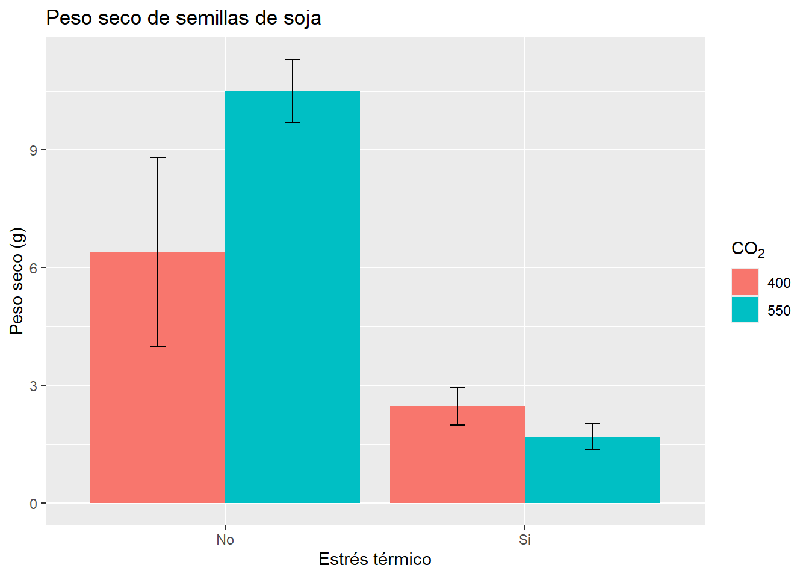
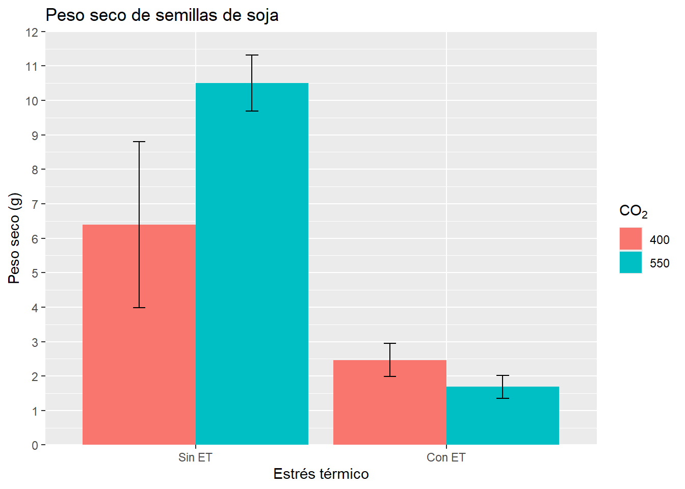
4.3.2 Colores
R permite la utilización de una gran cantidad de colores diferentes (ver documento ColorChart). Se pueden modificar los colores de casi todos los objetos en un gráfico, aquí nos centraremos en contornos y rellenos de nuestros elementos que representan los datos. Como regla general, si nuestro geom admite relleno este se modifica con el parámetro fill, mientras que col modificará el borde. Si no se admite relleno (gráficos de líneas o puntos), solo utilizaremos col. Cómo modificamos los colores varía un poco según diferentes casos:
Si el color es el mismo para todos, se modifica dentro de los parámetros del geom. Por ejemplo:
geom_col(col= "black", fill= "red").Si debemos modificar el color o el relleno según un criterio de clasificación (es decir que seteamos el parámetro que clasifica en el aes()) usaremos el comando
scale_colour_manual(values=c("color1", "color2", ....))para establecer manualmente los colores. Lo mismo para el relleno pero seráscale_fill_manual(values=c("color1", "color2", ....)). Es importante destacar que la cantidad de colores debe coincidir con los niveles del factor en cuestión.
Veamos un ejemplo donde combinamos lo visto hasta ahora:
G3 + geom_col(col = "black", position = "dodge") + # repetimos para cambiar el borde
scale_fill_manual(values = c("skyblue3", "antiquewhite2"))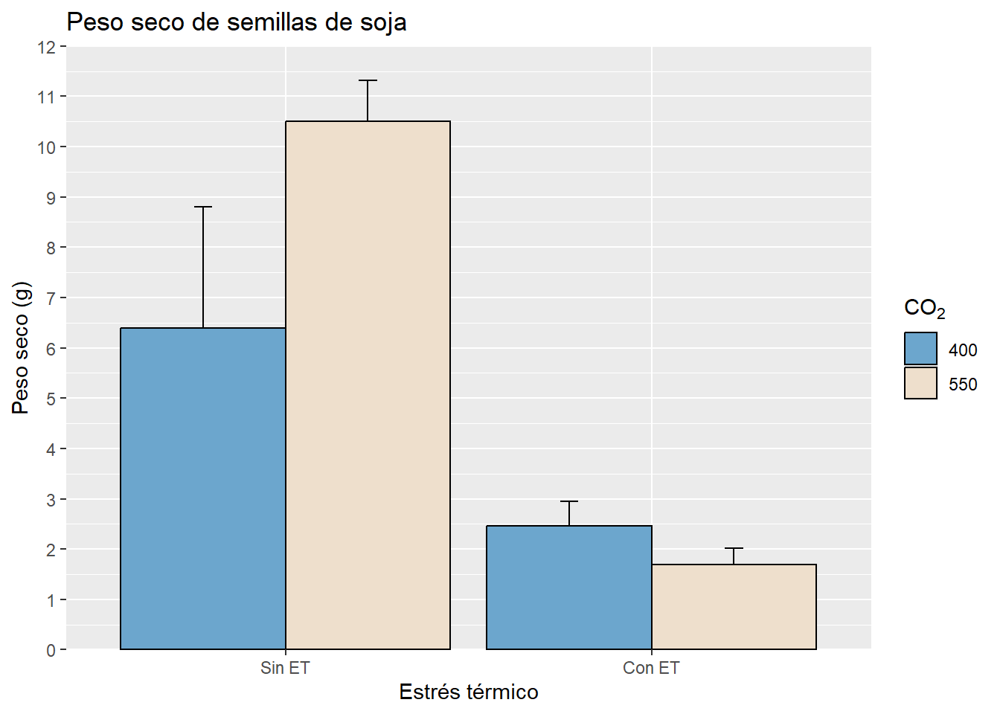
En estos casos decidimos establecer manualmente el color. También podemos utilizar paletas de colores que vienen preestablecidas. Algunas están con el R base y otras debemos cargarlas con paquetes. En este taller veremos el uso de la paleta viridis, de paquete homónimo. La función que utilizaremos es scale_fill_viridis_d(), donde la “d” refiere a discreto. Esta escala está especialmente diseñada para que la puedan distinguir personas daltónicas y asignará tantos colores como sean necesarios. La escala viridis va del violeta al amarillo, podemos reducir la escala estableciendo el comienzo y el final de la misma. Por otro lado, también veremos el uso del paquete paletteer, que incluye una enorme cantidad de paletas para utilizar (https://r-charts.com/es/paletas-colores/). Por ejemplo en el gráfico anterior:
G3 + geom_col(col = "black", position = "dodge") +
scale_fill_viridis_d()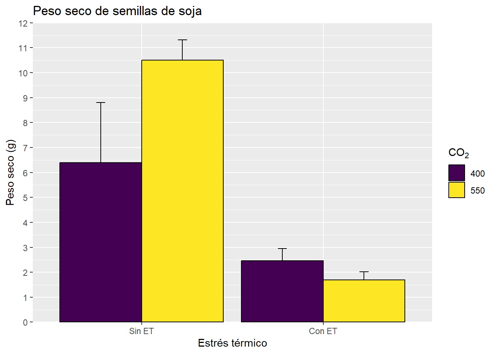
library(paletteer)
G3 + geom_col(col = "black", position = "dodge") +
scale_fill_manual(values = paletteer_d("colorBlindness::Blue2DarkOrange12Steps", 2,
type = "continuous"))Si queremos saber exactamente qué colores utilizó la función, podemos utilizar la función viridis para nombrar los colores:
library(viridis)
viridis(2)[1] "#440154FF" "#FDE725FF"paletteer_d("colorBlindness::Blue2DarkOrange12Steps", 2,
type = "continuous")<colors>
#1E8E99FF #993F00FF Nos los da con el código RGB que podemos utilizar para otros gráficos.
4.3.3 Forma y tipo de línea
Otro parámetro que puede generar diferencias entre los niveles de una factor o que puede ser modificado para todos nuestros valores es la forma. Para indicar el cambio se hará del mismo modo que para el color o relleno, pero con el parámetro shape. Las diferentes formas se pueden visualizar en el documento Refcard, son 25 y algunas permiten que se les modifique el relleno. La forma puede ser combinada por el color para enfatizar las diferencias, y originarán una sola leyenda, por ejemplo:
ggplot(HOJA,
aes(SPAD, Pb,
col = ET, # clasificamos por color
shape = ET)) + # y por forma
geom_point(size= 5) +
scale_shape_manual(values = c(16, 18))A su vez podemos establecer tipos de líneas en un gráfico de líneas. Funciona de la misma manera con el parámetro linetype:
ggplot(HOJA,
aes(SPAD, Pb,
col = ET,
shape = ET,
linetype = ET)) +
geom_point(size= 5) +
geom_line()+
scale_shape_manual(values = c(16, 18)) +
labs(col = "Estrés \ntérmico",
shape = "Estrés \ntérmico",
linetype = "Estrés \ntérmico")Como vemos, como todos los parámetros de clasificación responden al mismo factor, la leyenda es una sola. Para modificar el título de la leyenda se debe indicar el cambio para todos los parámetros involucrados.
También se puede clasificar por tamaño en el caso de una variable continua, generará una escala automática.
ggplot(HOJA,
aes(SPAD, Pb,
size = Pb, # genera una escala discreta de tamaños
col = Pb)) + # genera una escala continua de color
geom_point()4.4 Subdivisión del gráfico con faceting
Si nuestro gráfico requiere la subdivisión por varios factores, además de por colores podemos dividir la ventana con faceting. El parámetro facet_grid requiere que introduzcamos por cuál/es variable/s se dividirá, por lo tanto toma la forma var1~var2, si solo hay una se reemplaza la faltante por un punto (.). Es importante destacar que todas las divisiones responderán a la misma escala. Así por ejemplo:
G2 + facet_grid(.~GT) # para dividir verticalmenteG2 + facet_grid(GT~.) # para dividir horizontalmenteG2 + facet_grid(CO2~GT) # para dividir por ambas4.4.1 Multifaceting
Si quisiéramos definir más de un nivel de división, podemos utilizar la función facet_nested del paquete ggh4x. Por ejemplo de la siguiente manera:
library(ggh4x)Warning: package 'ggh4x' was built under R version 4.4.2G2 + facet_nested(.~GT+CO2) # cada nivel de GT se divide por CO24.5 Definiendo la estética de nuestros gráficos
4.5.1 Exportación y edición posterior: un arma de doble filo
La posibilidad de exportar un gráfico y editarlo posteriormente en otro software siempre está sobre la mesa. Este apartado tiene como idea presentar y analizar brevemente sus ventajas y desventajas.
En este caso la que más he utilizado y funciona muy bien es el uso de imágenes vectorizadas. Si exportamos un archivo en formato svg, el mismo podrá verse en esta forma en software de edición de imagen. El que yo recomiendo es Inkscape, ya que es gratuito y multiplataforma y su forma de uso es muy intuitivo. La ventaja de tener la imagen vectorizada es que no perdemos calidad y además nos brinda la posibilidad de manipular cada uno de los elementos del gráfico individualmente.
El manejo externo de los gráficos es una herramienta muy poderosa en cuanto a las posibilidades que nos ofrece, ya que podemos modificar lo que queramos a nuestro antojo y con muy buenos resultados. Sin embargo, tiene una desventaja enorme: nuestra edición no es repetible. Esto quiere decir, que si por algún motivo tuvimos que hacer el gráfico de nuevo, todo el trabajo de edición empieza de cero. Y, al menos en mi experiencia de trabajo, rehacer un gráfico ya hecho es cosa de todos los días (decidimos incluir o no un outlier, corregimos datos, modificamos un factor, cambiamos de idioma el gráfico, etc.).
Por estos motivos, mi recomendación es intentar hacer lo más posible directamente en R y solo en casos de extrema necesidad acudir al software externo. A pesar de esto, no deja de ser una herramienta potente y a tener en cuenta.
4.5.2 Definiendo el theme en ggplot2
Cuando realizamos un gráfico con ggplot la mayor parte de las cuestiones estéticas se definen dentro del parámetro theme. Este apartado nos permite modificar las letras del gráficos en general, de los ejes, de los títulos de los ejes, la posición y estructura de la leyenda, etc. La estructura general consiste en nombrar el elemento a modificar, luego establecer el tipo de elemento, y finalmente modificar los parámetros. Supongamos a modo de ejemplo que queremos que las etiquetas del eje x estén en negro, con tamaño de letra 12, con inclinación vertical. Entonces escribiremos:
Gráfico +
theme(axis.text.x = element_text(size=12 ,
colour = "black",
angle= 90))Podemos ir separando por comas diferentes elementos que queramos modificar. Otra opción interesante es crear un objeto con todas nuestras modificaciones, que luego podemos aplicar a todos nuestros gráficos. También existen temas prediseñados que modifican varios parámetros a la vez. Estos se introducen con el comando theme_ donde las opciones son muchas, en particular a mí me gusta la opción theme_pubr 1 del paquete ggpubr. Podemos combinar todo en un objeto, por ejemplo:
library(ggpubr)
Adjuntando el paquete: 'ggpubr'The following object is masked from 'package:plyr':
mutateTHEME <-theme_pubr() +
theme(plot.caption = element_text(hjust = 0, vjust=.5),
plot.title.position = "plot",
plot.title = element_text(size=rel(1.5)),
text = element_text(size=12, colour = "black"),
axis.text = element_text(size=12 , colour = "black"),
axis.line = element_line(colour = "black"),
legend.position = "right",
legend.text = element_text(size=12, colour = "black"),
legend.background = element_rect(colour = "black")) # recuadro de la leyendaLuego podemos incorporarlo al final de los gráficos, así:
G1 + THEMEG3 + THEME4.5.3 Fuentes
Dentro de la opción text, podemos elegir la fuente de nuestro gráfico.
...theme(
text = element_text(family = "Times New Roman"))Las fuentes disponibles en windows no son muchas: “Arial”, “Times New Roman”, “Calibri”, “Courier New”, “Verdana”. Varían un poco de acuerdo a nuestro sistema operativo. Con el paquete extrafont podemos incorporar bastantes más.
Para chequear las fuentes disponibles en windows ejecutamos:
names(grDevices::windowsFonts())[1] "serif" "sans" "mono" Para agregar en R las que tengamos en nuestro sistema podemos correr font_import(), luego cargarlas con loadfonts() y ver la lista con fonts() :
library(extrafont)
loadfonts()
fonts()Algo muy importante, es que al momento de exportar como pdf nuestras imágenes, la fuentes tienen que estar embebidas para que las pueda leer cualquier lector de archivos pdf. Por suerte las nuevas versiones de ggsave() incluyen una opción que realiza esto de manera muy simple:
G3 +
theme(text = element_text(family = "serif", size = 18))G3 +
theme(text = element_text(family = "mono", size = 18))ggsave("G3.pdf", device = cairo_pdf)4.6 División de la ventana gráfica
Esta es una herramienta muy útil que nos permite visualizar más de un gráfico a la vez en la ventana 4 de RStudio. Ya que esta ventana suele ser pequeña, es recomendable marcar en Zoom una vez creado el conjunto de gráficos para verlo externamente.
4.6.1 layout
Esta opción ya la vimos anteriormente para los gráficos de supuestos. Básicamente se debe especificar una matriz mediante el comando matrix cuya estructura básica es:
matrix(1:n, #cantidad de casilleros
r,p) # distribución en filas y columnasEntonces para una matriz 2*2 será:
matrix(1:4,2,2)Para una 3*4 será:
matrix(1:12,3,4)Por lo tanto, el comando de división gráfica tendrá la forma:
layout(matrix(1:2,2,1))
Gráfico 1
Gráfico 2
layout(1) # al cerrar volvemos a establecer una ventana únicaSe deben incluir tantos gráficos como particiones creadas. Por ejemplo viendo dos gráficos creados anteriormente:
# 1 fila y 2 columnas
layout(matrix(1:2,1,2))
lineplot.CI(x.factor = SPAD, response = Pb, data = HOJA)
boxplot(PS~ET, ylim = c(0,12), data = SEM_Alim)layout(1)Los parámetros widths y heights permite establecer uno más grande que el otro:
layout(matrix(1:2,1,2), widths = c(2,1))
lineplot.CI(x.factor = SPAD, response = Pb, data = HOJA)
boxplot(PS~ET, ylim = c(0,12), data = SEM_Alim)layout(1)4.6.2 par
La función par también nos permite dividir la ventana gráfica. Las opciones que ofrece son muchísimas, incluyendo opciones avanzadas del manejo de márgenes. Aquí solo la nombraremos brevemente, para obtener el mismo resultado mostrado anteriormente podemos hacer:
par(mfrow = c(1, 2)) # filas y columnas
lineplot.CI(x.factor = SPAD, response = Pb, data = HOJA)
boxplot(PS~ET, ylim = c(0,12), data = SEM_Alim)
par(mfrow = c(1, 1)) # volvemos a como estaba antesTanto la función layout como par son compatibles con Devices para la exportación.
4.6.3 grid.arrange
Esta función se encuentra dentro del paquete gridExtra y nos permite subdividir la ventana gráfica en un entorno de ggplot2. Además, es enteramente compatible con ggsave para su exportación.
Su estructura general tiene la forma:
grid.arrange(
Grafico1 + modificaciones,
Grafico2 + modificaciones,
.....,
ncol= número de columnas,
nrow= número de filas, # en general con establecer el número de columnas es suficiente
widths=c(1,1,2), # podemos modificar el ancho relativo de cada columna
heights=c(3,4,4) # lo mismo para las filas
)Como los gráficos en ggplot suelen involucrar muchas líneas, es conveniente crear un objeto con cada gráfico a utilizar. Por ejemplo, podemos combinar los gráficos creados anteriormente:
grid.arrange(G2, G3, ncol=2)Para exportar estos gráficos, hay que reemplazar en el mismo comando ggsave por todo el arreglo con grid.arrange.
4.6.4 patchwork
El paquete patchwork2 permite una opción muy versátil para la combinación de gráficos y división de la ventana gráfica. Su uso además es muy sencillo, ya que si ya creamos los gráficos y tenemos el paquete cargado, podemos unir gráficos simplemente sumándolos:
G2 + G3Existen diferentes combinaciones posibles, por ejemplo:
(G2 + G3)/ G1Dentro de este paquete se encuentra la función wrap_plots que acomoda correctamente los gráficos y alinea los ejes. Así podemos correr:
wrap_plots(G1, G2, G3)Podemos modificar la estructura del gráfico con la función plot_layout dentro de wrap_plot. Aquí podemos definir la estructura de filas y columnas, la posición de las leyendas (o agruparlas en algún sector). Por su parte, se pueden modificar e incluso automatizar anotaciones con plot_annotation. Por ejemplo modificando el agrupamiento anterior:
wrap_plots(G1 + G2 + G3 +
plot_layout(ncol = 1,
nrow = 3,
byrow = NULL,
guides = 'collect')) + # muestra las leyendas juntas
plot_annotation(tag_levels = 'a', # establecemos el tipo de enumeración
tag_prefix = '(',
tag_suffix = ')')Veremos más adelante algunas otras posibilidades con este paquete. Para exportar los gráficos se procede de igual manera que con cualquier otro gráfico de ggplot mediante la función ggsave.
También si los gráficos estuvieran combinados con patchwork podemos incluir la cuestión estética a todos a la vez al final separando con el comando &:
wrap_plots(G1 + G2 + G3 +
plot_layout(ncol = 1,
nrow = 3,
guides = 'collect')) +
plot_annotation(tag_levels = 'a',
tag_prefix = '(',
tag_suffix = ')') &
THEMESi dos de los gráficos comparten el eje x (por ejemplo), puede ser de utilidad ocultar el título en uno de ellos, o incluso ocultar la escala en el eje. Esto se puede hacer de diferentes maneras, pero aquí les muestro una incluyendo el elemento vacío en el tema con element_blank :
wrap_plots(G1 + THEME +
theme(axis.title.x = element_blank(),
axis.text.x = element_blank())+
G2 + THEME +
plot_layout(ncol = 1,
nrow = 2,
guides = 'collect')) +
plot_annotation(tag_levels = 'a',
tag_prefix = '(',
tag_suffix = ')')4.7 Actividad 6
Exporte los dos gráficos que realizó en las actividades 3 y 5 combinados en una sola figura de dos columnas y una fila, agregue etiquetas a cada uno, aplique colores y escalas a los ejes. Junte las leyendas en una sola.
5 Unidad 5. Otros tipos y parámetros gráficos
5.1 Gráficos de área
Para trabajar en de aquí en adelante utilizaremos otra base de datos. La misma la armé en base a los datos de superficie cultivada, producción y rendimiento de soja en Argentina y el mundo (extraída de informes de la FAO3) desde 1960 hasta 2023.
soja <- read_csv("produccion_soja_2023.csv")
# Dividiremos la base de datos en dos
mundo <- soja %>%
filter(Area == "World")
argentina <- soja %>%
filter(Area == "Argentina")En primer lugar introduciremos un nuevo geom: geom_area. Como su nombre lo indica, permite graficar superficies completas en base a una escala continua. En este caso usaremos como eje x los años, como si fueran continuos. Así por ejemplo podemos graficar la variación de la superficie cultivada a lo largo del tiempo:
ggplot(argentina, aes(Year, Sup/1000000))+ # editamos la sup para no ver números tan grandes
geom_area(fill="cornflowerblue", col="gray21") +
scale_y_continuous(expand = c(0,0), breaks = seq(0, 25, by = 5))+
scale_x_continuous(expand = c(0,0),breaks = seq(1960,2025, by=5))+
labs(x= "Años",
y= "Superficie sembrada [millones de ha]") +
THEMEAhora supongamos que queremos graficar al mismo tiempo la superficie de Argentina y la global. Una opción sería dividir la variable Sup entre las regiones por fill.
ggplot(soja, aes(Year, Sup/1000000, fill=Area))+
geom_area(col="gray21") +
scale_y_continuous(expand = c(0,0), breaks = seq(0, 150, by = 10))+
scale_x_continuous(expand = c(0,0),breaks = seq(1960,2025, by=5))+
labs(x= "Años",
y= "Superficie sembrada [millones de ha]") +
THEMESi bien parece funcionar, al incluir esta opción geom_area apila los datos de una región con la otra. Por lo tanto, lo que vamos a hacer es superponer dos gráficos de área al mismo tiempo. Para ello introduciremos una nueva idea que es la de utilizar dos bases de datos diferentes en el mismo gráfico. Cuando creamos nuestro gráfico (ggplot(aes(…))) los geom que introduzcamos luego “heredan” tanto la base de datos como la estructura x-y determinada por aes que acompaña a ggplot. Si nuestro nuevo geom requiere una diferente, debemos expresamente introducirla. Finalmente, como la inclusión de nuevos geom no incorpora una leyenda, con la función annotate podemos introducir texto en algún lugar específico para clarificar qué significa cada área. También es posible introducir segmentos, flechas y otros elementos con esta función. Veamos cómo quedaría:
ggplot(mundo, aes(Year, Sup/1000000))+ # aes principal
geom_area(fill="burlywood3", col="gray21") + # primer área, es la que va al fondo
scale_y_continuous(expand = c(0,0), breaks = seq(0,120, by = 10))+
scale_x_continuous(expand = c(0,0),breaks = seq(1960,2025, by=5))+
labs(x= "Años",
y= "Superficie sembrada [millones de ha]") +
geom_area(data= argentina, aes(Year, Sup/1000000), # segunda, aparece al frente
fill="cornflowerblue", col="gray21")+
annotate("text", x=2008, y= 8, label = "Argentina", # agregamos texto en un lugar específico
size=6)+
annotate("text", x=1990, y= 35, label = "Mundo", size=6) +
THEMEEntonces ahora nos queda un idea mucho mejor de cómo a crecido la superficie sembrada de Argentina respecto a la del resto del mundo.
Aquí hemos expuesto otra de las funcionalidades que nos facilita ggplot2: introducir más de un geom a la vez. Este puede ser del mismo tipo o diferente, como veremos a continuación.
5.2 Combinando gráficos de distinto tipo
También puede resultarnos de utilidad combinar gráficos de dos tipos diferentes. Esta opción es muy útil y sencilla de utilizar, sin embargo hay un par de condiciones a cumplir:
- el eje x debe ser el mismo.
- el eje y también debe ser el mismo, o al menos ser “compatible” en escala (podría introducirse un eje secundario, pero excede al contenido de este taller).
Una vez cumplidas estas condiciones, es solo cuestión de usar nuestra creatividad para crear el mejor gráfico. Supongamos como ejemplo que queremos comparar el rendimiento de la soja en Argentina contra el promedio mundial. Podemos hacer un gráfico de columnas clasificando por región:
soja %>% mutate(Area=fct_recode(Area,
"Argentina"="Argentine", # modificamos los factores al español
"Mundo" ="World")) %>%
ggplot(aes(Year, Yield/1000, fill=Area))+
geom_col(position="dodge") +
scale_y_continuous(expand = c(0,0), breaks = seq(0,5, by = .5))+
scale_x_continuous(expand = c(0,0),breaks = seq(1960,2025, by=5))+
labs(x= "Años",
y= "Rendimiento [Tn/ha]")+
THEME +
theme(legend.position = c(.2,.85))Como vemos, de esta manera nos quedan demasiadas columnas y es muy difícil tener una idea clara del patrón. En cambio vamos a colocar el rendimiento global como puntos unidos por una línea. Para ello utilizaremos las bases de datos argentina y mundo. Además vemos que las comas del eje Y aparecen como puntos, lo modificaremos al formato del español:
ggplot(argentina, aes(Year, Yield/1000))+ # base de datos de argentina
geom_col(fill="cornflowerblue") + # creamos las columnas
scale_y_continuous(expand = c(0,0), breaks = seq(0,5, by = .5),
labels=function(x) format(x, decimal.mark = ",", # cambio . por ,
scientific = FALSE))+
scale_x_continuous(expand = c(0,0),breaks = seq(1960,2025, by=5))+
labs(x= "Años",
y= "Rendimiento [Tn/ha]")+
geom_line(data= mundo, aes(Year, Yield/1000), # segundo geom, del mundo
col="red")+
geom_point(data= mundo, aes(Year, Yield/1000), # tercer geom, de nuevo hay que especificar
col="red", size=2)+
annotate("text", x=1990, y= 2.5, label = "Argentina", col="cornflowerblue", size=5)+
annotate("text", x=1965, y= 1.6, label = "Mundo", col="red", size=5) +
THEMEAhora nos resulta mucho más fácil diferenciar en qué años (o períodos) el rendimiento fue mayor en Argentina que el promedio global.
5.2.0.1 Eje secundario
Si bien el uso de gráficos con ejes secundarios no fue planteado por el creador de ggplot2 por no considerarlo útil (idea que comparto), se puede incorporar mediante el parámetro sec.axis dentro de scale_y_continuos . Es importante destacar que este eje secundario se debe plantear como una transformación del eje primario. Esto limita fuertemente su uso, y en este curso simplemente aproximaremos una forma de hacerlo para ilustrar la segunda variable de una forma “aproximada”.
Supongamos que queremos graficar, siguiendo con nuestra base de datos, el rendimiento y la producción de soja en Argentina a lo largo del tiempo, en el mismo gráfico. Tomaremos como eje primario el de rendimiento, y secundario el de producción. Como un eje tiene que se una proporción del otro, creamos una nueva variable que nos indique la relación entre ellos:
argentina <- argentina %>%
mutate(Relacion = Production/(Yield/1000))Y luego utilizaremos el valor máximo de estar relación para graficar y que ambas variables se “observen” en una escala similar. Luego deberemos realizar una conversión de la escala a poner en el eje secundario siguiendo un patrón similar. Como vamos a usar la relación máxima entre rendimiento y producción, el valor graficado será aproximado ya que cada año dicha relación será diferente. Sin embargo, veremos que la aproximación es bastante buena y sirve de forma representativa.
ggplot(argentina, aes(x=Year))+ # especificamos el eje x
geom_col(aes(y=Yield/1000), # luego en cada geom el eje y
fill="darkolivegreen2") +
scale_y_continuous(expand = c(0,0), limits=c(0,3.5),
breaks = seq(0,5, by = .5),
sec.axis =
sec_axis(~.*max(argentina$Relacion)/1000000, #la relación de los ejes
name="Producción [millones de Tn]", # título
breaks=seq(0,65, by=5)))+
scale_x_continuous(expand = c(0,0),breaks = seq(1960,2023, by=5))+
labs(x= "Años",
y= "Rendimiento [Tn/ha]")+
geom_line(aes(y=Production/max(Relacion)),
col="blue3")+
geom_point(aes(y=Production/max(Relacion)),
col="blue3", size = 4)+
annotate("text", x=1990, y= 2.5, label = "Rendimiento", col="darkolivegreen4", size=6)+
annotate("text", x=2010, y= 1, label = "Producción", col="blue3", size=6) +
THEME5.3 Pivoteando (pivoting)
La última funcionalidad que veremos en este taller es el uso de pivot_longer y pivot_wider. Estas dos funciones tienen usos opuestos y veremos de a una cómo se usan, ya que nos permite transformar completamente la estructura de la base de datos, a partir de intercambiar columnas por filas (o viceversa).
5.3.1 pivot_longer
Nos permite agrupar diferentes variables (que tengamos en varias columnas) en una que contenga el nombre de la categoría (que antes era el nombre de una columna) y otra que contenga el valor numérico que corresponde a cada una. Nada mejor para ilustrarlo que un ejemplo. Recordemos nuestra base de datos soja que tenía esta estructura inicial:
head(soja)# A tibble: 6 × 6
Area Element Year Sup Production Yield
<chr> <chr> <dbl> <dbl> <dbl> <dbl>
1 Argentina Area harvested 1961 980 957 977
2 Argentina Area harvested 1962 9649 11220 1163
3 Argentina Area harvested 1963 19302 18920 980
4 Argentina Area harvested 1964 12220 14000 1146
5 Argentina Area harvested 1965 16422 17000 1035
6 Argentina Area harvested 1966 15689 18200 1160Supongamos ahora que queremos crear una columna que contenga en sus filas el tipo de parámetro que estamos midiendo (superficie, producción o rendimiento) y otra que contenga el valor del parámetro correspondiente. La estructura básica de pivot_longer es la siguiente:
pivot_longer(c(`variable_1`, `variable_2`, ... , `variable_n`), # variables a combinar
names_to = "Variables", # el titulo de la nueva columna con las variables
values_to = "Valor") # el título de la nueva columna con el valor numéricoNotar que el nombre de las variables se debe introducir entre tildes invertidas (`). En nuestro caso de ejemplo será:
soja %>% pivot_longer(c(`Sup`, `Yield`, `Production`),
names_to = "Variables",
values_to = "Valor")# A tibble: 378 × 5
Area Element Year Variables Valor
<chr> <chr> <dbl> <chr> <dbl>
1 Argentina Area harvested 1961 Sup 980
2 Argentina Area harvested 1961 Yield 977
3 Argentina Area harvested 1961 Production 957
4 Argentina Area harvested 1962 Sup 9649
5 Argentina Area harvested 1962 Yield 1163
6 Argentina Area harvested 1962 Production 11220
7 Argentina Area harvested 1963 Sup 19302
8 Argentina Area harvested 1963 Yield 980
9 Argentina Area harvested 1963 Production 18920
10 Argentina Area harvested 1964 Sup 12220
# ℹ 368 more rows5.3.2 pivot_wider
La función pivot_wider hace exactamente lo contrario que pivot_longer, nos permite a partir de una columna con varios niveles de un factor, crear múltiples columnas (una para cada nivel del factor). Para utilizarla, cada fila que tengamos tiene que ser única (es decir, lo elementos que no son variables respuestas no pueden ser los mismos entre dos filas) para que no se genere confusión. La estructura general es la siguiente:
pivot_wider(names_from = variable, # variable a dividir
values_from = Valor) # variable respuesta numérica a repartirEntonces, a modo de ejemplo, supongamos que queremos comparar como se ha incrementado la producción de soja en Argentina y el mundo desde 1961 hasta 2023. Para ello podemos primero seleccionar las variables de interés (solo nos interesa la producción), después filtrar los años de interés y crear nuevas columnas.
soja %>% select(Area, Year, Production) %>% # seleccionamos
filter(Year==1961 | Year==2023) %>% # filtramos
pivot_wider(names_from = Year, values_from = Production) %>% # repartimos en columnas
mutate(Prop= round(`2023`/`1961`, 0)) # transformamos con las variables entre ` `# A tibble: 2 × 4
Area `1961` `2023` Prop
<chr> <dbl> <dbl> <dbl>
1 Argentina 957 25044978 26170
2 World 26883158 371173609 14Podemos ver como en Argentina en el último medio siglo se incrementó la producción 26170 veces, mientras que a nivel global 1381 veces.
Estas funciones tienen diferentes usos. Como vimos, pivot_wider puede servirnos para convertir variables y comparar niveles de un factor. pivot_longer puede servir tanto para corregir bases mal armadas como para generar nuevos criterios de clasificación que pueden ser útiles en algunos gráficos.
Por ejemplo final, supongamos que queremos ver en un mismo gráfico qué porcentaje de la producción global y de la superficie global sembrada representa Argentina. Para ello vamos a:
- seleccionar las columnas de interés
- unir producción y superficie en una única columna (
pivot_longer) - dividir Argentina y Mundo en dos columnas (
pivot_wider) - calcular la proporción que representa Argentina del global y con ella el porcentaje
- graficar aplicando como criterio de clasificación del color la columna que especifica si se trata de producción o superficie.
Quedaría de la siguiente manera:
soja %>%
select(Area, Year, Sup, Production)%>%
pivot_longer(c(`Sup`, `Production`), names_to = "variable", values_to = "value") %>%
pivot_wider(names_from = Area, values_from = value) %>%
mutate(
prop = Argentina/World,
porc = prop*100 # notar que podemos usar la variable recién creada
)%>%
ggplot(aes(Year, porc, col=variable))+
geom_point()+
geom_line()+
scale_y_continuous(limits=c(0,30),expand = c(0,0), breaks = seq(0, 25, by = 2))+
scale_x_continuous(expand = c(0,0),breaks = seq(1960,2025, by=5))+
labs(x= "Años",
y= "Porcentaje del global")+
scale_colour_manual(values=c("Sup"= "blue4","Production"="red"), guide= "none")+
annotate("text", x=2007, y=10, label="Superficie\ncultivada", col="blue4", size=5)+
annotate("text", x=1995, y=18, label="Producción", col="red", size=5) +
THEME5.4 Gráficos de biplot para análisis multivariado
Esta sección tiene por objetivo mostrar que el conocimiento de los gráficos con ggplot2 sobrepasan al uso individual de este paquete, sino que hay mucho otros que se basan en él para generar gráficos. Un ejemplo de ello es el paquete factoextra para gráficos multivariados.
Vamos a desarrollar un ejemplo donde armamos un biplot a partir de un análisis de componentes principales (PCA). Vamos a retomar a la base de datos ALIM, y haremos un PCA comparando la concentración de distintos metales en los órganos, su peso seco y verdor. Para ello ejecutamos:
library(factoextra);library(FactoMineR);library(ggrepel)Warning: package 'factoextra' was built under R version 4.4.2Welcome! Want to learn more? See two factoextra-related books at https://goo.gl/ve3WBa
Adjuntando el paquete: 'factoextra'The following object is masked from 'package:agricolae':
hcutWarning: package 'FactoMineR' was built under R version 4.4.2res.pca <- PCA(ALIM[, -c(1:5)], scale.unit = TRUE)Una vez creado el objeto de resultado de nuestro PCA, vamos a realizar un gráfico de biplot con la función fviz_pca_biplot de factoextra:
BIPLOT <- fviz_pca_biplot(res.pca,
repel = TRUE,
geom.ind = "point",
col.var = "deeppink4",
col.ind = "black",
labelsize=5,
axes.linetype = "blank",
alpha.var=0.5,
title = NULL) ; BIPLOTAhora vamos a realizar algunas modificaciones estéticas, y a incluir una clasificación por color según el órgano de el que se trate. Para ello vamos a crear un objeto nuevo con los porcentajes de explicación de cada eje:
VARIANCE <- round(get_eigenvalue(res.pca)[,2], 2)
BIPLOT +
geom_point(aes(col = ALIM$Organo),size = 4)+
geom_hline(yintercept = 0, linetype = "dotted", col = "grey30")+
geom_vline(xintercept = 0, linetype = "dotted", col = "grey30")+
labs(x = paste("PC 1 (", VARIANCE[[1]], "%)"),
y = paste("PC 2 (", VARIANCE[[2]], "%)"),
col = "Órgano") +
scale_y_continuous(expand = c(0,0), limits = c(-3,3),
breaks = seq(-40,40, by = 1))+
scale_x_continuous(expand = c(0,0), limits = c(-5.5,5.5),
breaks = seq(-9,9, by = 2)) +
scale_colour_viridis_d() +
THEMEFootnotes
Para más información del paquete ggpubr dirigirse a https://rpkgs.datanovia.com/ggpubr/ . Es un paquete muy interesante orientado a publicaciones usando ggplot2.↩︎
Para más información acerca del uso de patchwork recomiendo la página https://patchwork.data-imaginist.com/index.html.↩︎
FAOSTATS. https://www.fao.org/faostat/en/#data/QCL↩︎